生成时间：2026-11-18T20:09:22+08:00
今日保留论文数：14
内容构成：今日新文 14 篇；补充推荐 1 篇；经典旧文精读 0 篇
阅读分层：重点精读 3 篇；相关简报 12 篇。精读依据科学贡献筛选，简报保留方法、结论及局限。
补充推荐论文数：1
数据源警告
- 本次有 2 个数据源访问异常；完整错误已保留在运行日志中，日报只显示摘要。
- 其他来源：2 个异常。
- 主要错误类型：其他 2 次。
高能天体物理重点
1. The imprint of neutron escape on non-thermal protons in AGN coronae
- 来源：arXiv / astro-ph.HE
- 链接：https://arxiv.org/abs/2611.21047v1
- 作者：Antonio Ambrosone, Damiano F. G. Fiorillo
- 公告 / 来源日期：2026-11-17
- 阅读层级：重点精读
- 评分：novelty 8/10，importance 8/10，relevance 10/10，final 9.70/10
- 推荐理由：p转n使AGN冕质子逃逸显著快于磁扩散，直接修正NGC1068中微子谱及注入效率推断；需精读固定能量密度与固定注入两种口径。
中文题目：质子变成中子之后怎样逃走——AGN 冕区中微子模型中的注入预算修正
做了什么：活动星系核的冕区是盘上方辐射强烈的热等离子体，也是解释 NGC 1068 的 TeV 中微子信号的一类候选区域。许多计算把光强相互作用写成质子连续变冷，保留它的带电身份。本文将质子与中子共同输运，显式追踪一次碰撞后核子的降能、重新注入和电荷交换。中子摆脱磁约束后，可以在衰变或再次碰撞前穿出冕区，进而改变原本由磁扩散决定的粒子停留时间。
作者比较了磁湍流随机加速和磁重联后注入两种方案。对固定稳态非热质子能量密度的湍流基准，维持粒子群需要的种子质子注入率可增加约两个数量级。只有 X 射线靶场的配置中，中微子谱峰下移约四倍，计入次级粒子冷却后积分光度降低约 30%。这些是给定冕区参数的模型比较。重联方案中的质子原本就按光穿越时间逃逸，因此新增中子通道的谱影响很小。
为什么重要：用中微子亮度反推质子加速效率，需要知道相同粒子能够留在源区多久、被反复加速多少次。只改变质子的能量而保留其磁约束，会使稳态粒子群显得较容易维持。本文把这个隐含假设具体展开，说明即使两个模型的中微子光度相近，它们要求的粒子补给也能显著不同。它影响的是从谱到能量预算的推断链，尚未建立新的 NGC 1068 观测拟合或排除全部湍流模型。
理论 / 观测 / 仪器方法价值：可借鉴的方法是将平均能损、核子身份变化和空间逃逸分开计算，再用同一相互作用生成器构造比较。作者保留了降能后的质子再加速，还用光子场卷积后的分支率和平均保留能量计算再注入。复用时必须明确归一化口径、边界条件和次级能量映射，并检查中子飞越、衰变和再相互作用三种时间尺度。
为什么应该关注：对中微子与伽马射线联合研究，下一步值得检查的是已有 Seyfert 冕区物理模板在加入中子逃逸后，是否仍能以允许的粒子供给和磁耗散功率解释实测谱。外逃中子还可能在更大尺度环境中相互作用或衰变，本文没有计算这部分辐射。IACT 对源区不透明性的限制和中微子谱形可以一起约束模型，但本文的约 30% 修正应重新计算后用于具体源。
展开详细解读：文章讲解、背景、理论、重点章节、图表与相关工作
文章详细讲解
科学问题从一次光介子相互作用开始。一个受磁场困住的高能质子既可能产生介子后仍是质子，也可能变成中子。连续能损近似只记录平均转移走了多少能量，因而会保留一个本应离开系统的带电粒子。若它继续参加随机加速，原来的计算便同时改变了高能谱和粒子循环次数。
作者用 NGC 1068 作为参数基准，设黑洞质量为 $6.7\times10^6M_\odot$，2–10 keV 光度为 $3\times10^{43}\,\mathrm{erg\,s^{-1}}$。湍流冕区半径取 $10R_g$，分别计算含盘光学紫外光和只有冕区 X 光的两种靶场。磁重联算例使用更紧致的 $2R_g$ 区域，非热质子由预设断幂律注入并按弹道逃逸。两种加速处方与两种光子场属于不同的模型选择，阅读时要逐项对应。
核心结果有两个层次。湍流冕区中，新输运改变质子在能量空间中的分布，也使粒子数补给大幅增加。在只有 X 光时，光介子碰撞本身限制加速，中子通道使高能截止和中微子峰更早出现。含强光学紫外场时，Bethe–Heitler 对产生已控制主要冷却，谱峰改变较小，但快速逃逸带来的种子供给问题依然存在。
模型边界也决定这些结果如何使用。作者采用均匀单区稳态描述，平均子核能量映射没有保留完整的碰撞涨落，中子相互作用部分使用同位旋近似。磁湍流加速和逃逸依赖给定磁化与相干尺度。若流体湍流扩散等过程已让质子快速离开，约百倍注入率修正就会减弱。外部环境的中子后续演化留待另算。
关键结果是怎么做出来的
第一步是固定环境而非先拟合中微子。由冕区半径、汤姆孙光深和磁化参数确定气体密度与磁场。湍流基准给出约 $7.6\times10^{10}\,\mathrm{cm^{-3}}$、$3.8\times10^4\,\mathrm G$ 和 $1.65\times10^3\,\mathrm s$ 的加速时间。再加入两种光子场，便能区分光子组成变化和输运处理变化。
第二步是看图 2、3 的时间尺度排序。质子磁扩散比光穿越慢，中子在相关能段则先穿出区域，来不及衰变或充分再相互作用。含盘光时，对产生显著冷却质子。没有盘光时，光介子碰撞频率达到加速频率的位置，比其平均能损频率达到加速频率的位置更早，因而两种算法的高能截止明显分离。
第三步用相同稳态质子能量密度比较图 4。连续近似的粒子会反复加速，在截止附近堆积。离散输运既把质子重新放入低能区，也把中子带出区域。为维持相同能量密度，需要重新调节种子注入归一化。低能分布的巨大差异显示了这项补给成本，不能把图中的密度比直接当作各能量上的总粒子数比。
第四步将稳态核子分布与中微子产生核卷积。图 5 的右面板在只有 X 光时呈现更早的高能下降，峰值从几十 TeV 移至不到 10 TeV。主文采用的产额参数化给出约 35% 积分光度差。附录 D 改用 Sim-B 产额时，无次级冷却得到约 39%，加入介子和缪子同步冷却后约为 30%。这三个数对应明确的计算方案，约 30% 是作者最终采用的代表口径。
第五步用重联情形作机制对照。此处固定的是注入功率，质子原本按光穿越时间离开。图 7 中两种输运的总核子能量密度只差约 1.6%，尽管离散解的中子约占核子能量的四分之一。两种中微子谱近乎重合，说明中子丰度本身不足以判断修正大小，还要比较原来的质子逃逸机制。
最后检查数值与物理近似。附录用碰撞生成器构造分支和能量保留系数，报告光子场卷积后的未分类通道对主算例作用很小。有限体积求解器在能量格点上迭代质子和中子的再注入，次级冷却另作传输计算。这些检查支持本文给定基准的比较，尚未提供跨全部冕区几何、粒子分布和观测数据的统一误差预算。
展开背景、理论、公式、模型和章节导读
背景知识
活动星系核通过黑洞吸积释放引力能。光学紫外光主要由较冷的吸积盘贡献，高温冕区将光子散射到 X 射线。若冕内也有非热质子，光子和气体便能充当强相互作用靶。介子衰变产生中微子，电磁次级粒子则在源内继续级联，因此中微子亮源的 TeV 伽马射线可以较弱。
NGC 1068 的中微子信号使紧致冕区模型受到关注。它提供了可检验的目标，但冕区半径、盘光是否充分照进冕区、磁化强度和质子加速过程仍有模型空间。相同的中微子谱可能来自不同加速与冷却的组合，解释需要同时检查光子背景与粒子停留。
随机加速指粒子反复与运动的磁结构交换能量。单次变化可以正负，整体能量扩散使粒子建立宽谱。带电质子绕磁力线运动并受湍流散射，因此能够长时间停留，反复获取能量。磁重联则把磁能迅速转换为粒子动能，本文将加速区的结果作为辐射区输入，采用另一种逃逸处方。
高能中子与质子的强相互作用相似，但没有电荷。它不受同样的磁约束，寿命又被相对论时间膨胀延长。因而质子变中子会同时改变粒子身份和停留时间。这种中性粒子逃逸在其他宇宙加速器中已有研究，本文将其与冕区随机再加速耦合，重新检查特定模型的稳态预算。
基础理论 / 方法脉络
先区分碰撞时间和能损时间。一次相互作用通常只把部分核子能量交给介子，因此平均能损时间比平均碰撞间隔长。若碰撞只是稍微降低能量，连续近似可能合适。若碰撞还把核子变成可自由逃逸的中子，就需要追踪身份，否则会遗漏一次碰撞造成的粒子移除。
降能再注入同样重要。离散处理将原能量的核子移除，再按分支概率和保留能量放回质子或中子的低能格点。低能质子还可以重新加速，中子则主要离开。对每个通道都处理源项，可以避免把全部碰撞都等同于永久消失，同时让逃逸与冷却各自占有正确位置。
两种光场决定哪种损失先控制高能端。较软盘光加强 Bethe–Heitler 对产生，这一过程仍由连续能损合理描述。只有 X 光时，光介子碰撞更直接控制截止，离散碰撞与平均损失之间的差异被放大。本文用这两个端点包围几何稀释的不确定性，实际源的光场可能处于两者之间。
稳态能量密度与注入功率是两个不同输入。规定能量密度相当于规定区域里目前存有多少非热能量。规定功率则规定每秒投入多少能量。输运改变粒子寿命后，要维持原存量就必须改变补给。本文湍流与重联采用不同归一化，读图时必须先确认这一点，再比较谱幅和注入效率。
公式与推导
以下公式按源区尺度、环境、逃逸、碰撞、再注入到可观测量顺序组织。除明确注明的稳态尺度解释，均取自主文相应方程。令 $n_a(E)$ 为单位体积、单位能量的核子数密度，$a=p,n$，$E$ 是源区系能量。
由主文式 1 定义引力与冕区尺度，
质量 $M$ 与无量纲半径 $r$ 给出长度。几何光穿越时间随后成为中子逃逸的自然基准。
式 4–6 用光深和磁化约束局地环境，
$\tau_T$ 为汤姆孙光深，$\sigma_T$ 为汤姆孙截面，$\sigma$ 为质子静质量能量密度定义的磁化参数。此处气体密度与非热分布 $n_p(E)$ 分别使用，避免把两者混为一体。
式 7–8 给出湍流加速和扩散逃逸，
其中 $\ell=\eta_{\rm coh}R_c$ 为相干长度，$\sigma_{\rm tur}$ 为湍流磁化，$e$ 为元电荷。高斯单位下 $eB\ell$ 具有能量量纲。最大值保证逃逸时间不短于光穿越时间。
式 27 与弹道逃逸给出中子的时间竞争，
高能使中子衰变时间延长。若前者远小于后者和中子再相互作用时间，中子便能把能量带离冕区。
式 17–19 将各向同性光场变为碰撞率及平均能损率，
$\gamma_a=E/(m_ac^2)$，$\epsilon'$ 是核子静止系光子能量，$K$ 是卷积后非弹性系数。率 $\Gamma$ 的单位为逆秒，乘以每次损失比例才得到能损频率。这一步说明用能损时间代替身份移除时间为何会产生偏差。
式 25–26 用平均保留比例构造再注入，
$E_*$ 为反解得到的母核子能量，$\xi$ 为给定通道的平均子核子保留比例。分母是能量映射的雅可比，保证每单位子能量的粒子数正确。系数必须先对靶光场平均，再对该有效函数求导。
主文式 33 的中子平衡把再注入连接到逃逸，
分子是中子产生率密度，分母收集三个移除频率。其结果还通过中子变质子和衰变源项返回质子方程，需要联立迭代。
第 3.2 节的湍流基准固定能量存量，
此处系数采用作者的基准磁耗散效率和重联速率。为理解补给成本，可用稳态尺度关系 $n_{\rm nt}\sim q_{\rm seed}t_{\rm res}$ 作教学估计。停留时间缩短时，在相近能量存量下种子注入率 $q_{\rm seed}$ 必须增大，不能把约百倍因子解释成所有能段的光度增幅。
式 35 将核子解映射到中微子源谱，
$\Phi_\nu$ 是包含介子和缪子衰变的产额核。再加中子光相互作用及气体碰撞，求和得到全味源产生谱。正文的谱峰变化来自这一卷积，不能直接把质子截止能当作中微子峰能。
附录式 71 检查次级冷却，
它由同步冷却时间与相对论衰变时间相等得到。$\tau_{a,0}$ 为静止寿命。在给定磁场下，缪子比带电介子更早受影响，因此需要检查高于谱峰的中微子尾部，再比较两种输运的积分光度。
模型拟合 / 应用方法
本文进行参数化物理模型的受控比较，未对 IceCube 事件作新的联合似然拟合。输入包括黑洞质量、X 光度和谱形、半径、光深、磁化及湍流相干尺度。两种光场体现盘光稀释的不确定性，不能将它们理解为从数据拟合得到的两组置信区间。
微观系数由 Chromo 配合 SOPHIA 2.0 和 Sibyll 2.3e 构造。光介子过程根据领先核子的身份和平均能量分支，气体碰撞系数在相关区间变化较弱，作者取 10 TeV 的代表值。连续近似的领先重子能损定义与离散传播的质子／中子条件平均并非完全相同，解释数值差异时应保留这项实现信息。
附录 C 使用 10 GeV 至 $10^8$ GeV 的 220 个对数能量格点。湍流方程的能量扩散采用有限体积离散，低能端零通量、高能端吸收。再注入经能量映射插值反解，光介子通道雅可比使用有效保留系数的数值导数，质子中子解以欠松弛迭代。作者给定的收敛容差是求解器停止标准，不等于总物理误差。
谱归一化需在任何复用前写清。湍流计算保持相同稳态质子能量密度，因此注入率随输运处理而变化。重联计算保持相同注入功率，没有在事后把两份稳态解归一到同一存量。不同图之间不能直接将振幅差排序为哪一种加速机制更有效。
拟合具体源时，建议将冕区光场、半径和逃逸处方连同离散核子输运一起纳入谱模板，检查物理注入功率与磁耗散预算。这里属于后续应用流程。本文已做的验证是时间尺度对照、次级产额参数化比较与次级冷却计算，没有提供这套观测参数反演的最终结果。
重点章节 / 结果段落怎么读
第 2 节先核对环境输入。将光子场方案 I／II 与湍流／重联两个加速处方分开，记录每个算例半径和磁场，后续时间尺度才具有可比性。
第 2.3、3 节连读碰撞算子与再注入。先看一次碰撞如何从原能量移除核子，再看不同身份的子核子如何回到方程，最后核对归一化条件。
第 5 节按图 2–5 阅读湍流基准。先由时间尺度解释谱截止，再解释固定能量密度下的注入成本，最后看全味中微子谱，不把这三层结论混成同一个百分比。
第 6 节用重联结果验证机制。关注弹道逃逸已存在这一条件，理解为何中子含量可观而中微子谱变化很小。
附录 A、C、D 对应三类实现边界。依次检查分支系数定义、数值边界与迭代，以及约 30% 光度修正的产额和次级冷却口径。
关键图表与解读
图3
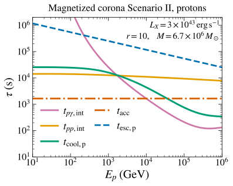
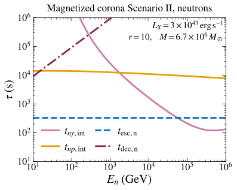
图注：只有冕区 X 光的方案 II 中，横轴为核子能量。左图比较质子的光强、强子碰撞、总冷却、加速与逃逸时间，右图比较中子的相互作用、逃逸和衰变时间。参数沿用图2的黑洞质量 6.7 百万太阳质量、半径 10 个引力半径及 2–10 keV 光度 3×10^43 erg/s。
怎么看这张图：先看中子光穿越时间是否低于衰变与碰撞，再看质子碰撞和平均冷却分别在何处接近加速。两种交点解释离散输运与连续近似的截止差异。 建立电荷交换导致快速逃逸及截止变化的时间尺度证据。
来源与置信度：arXiv HTML；source verified；https://arxiv.org/html/2611.21047v1/proton_timescales_scenarioII.svg；https://arxiv.org/html/2611.21047v1/neutron_timescales_scenarioII.svg
图4
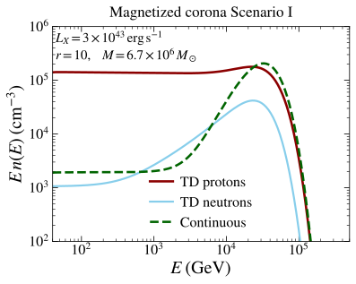
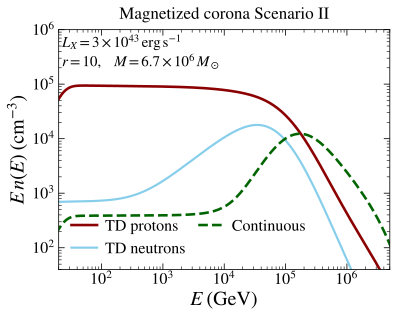
图注：稳态核子分布随能量的变化。深红实线为离散降能输运的质子，绿虚线为连续能损近似的质子，浅蓝线为离散解中的中子。左图为含盘光与 X 光的方案 I，右图为仅 X 光的方案 II。
怎么看这张图：两种质子解按相同能量密度归一。关注低能补给与高能堆积的差异，图中振幅不能直接当作固定注入功率的产额差。 展示稳态谱形、再注入和核子身份变化。
来源与置信度：arXiv HTML；source verified；https://arxiv.org/html/2611.21047v1/TD_vs_continuous_scenario_I.svg；https://arxiv.org/html/2611.21047v1/TD_vs_continuous_scenario_II.svg
图5
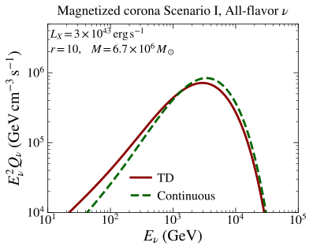
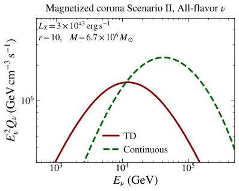
图注：全味中微子产生率随中微子能量的变化。深红实线表示离散降能输运，绿虚线为连续能损近似。左、右图分别采用方案 I 和 II 的光子场。
怎么看这张图：右图谱峰与高能下降明显前移。该图固定稳态质子能量密度，主文约35%光度差与附录计入次级冷却后的约30%使用不同产额及冷却口径。 将核子输运差异连接到中微子可观测谱。
来源与置信度：arXiv HTML；source verified；https://arxiv.org/html/2611.21047v1/neutrino_spectrum_scenario_I.svg；https://arxiv.org/html/2611.21047v1/neutrino_spectrum_scenario_II.svg
强相关工作
Fiorillo 等关于 NGC 1068 强湍流冕的工作建立了本文加速和磁约束的直接背景。本文沿用其一类环境参数，并进一步让光强相互作用产生的中子自由离开，同时保留降能质子的重新加速。因此，差别落在粒子输运的闭合方式，原模型的全部参数与结论需要逐项重新计算。文中参考文献给出的对应记录为 arXiv:2407.01678。
磁重联冕区模型 arXiv:2310.18254 是另一条直接比较路径。它将加速结果注入紧致辐射区，质子已快速逃逸，所以本次电荷交换修正较弱。Kelner–Aharonian 的光强相互作用产额参数化与本文附录的 Sim-B 对照则说明，中微子产额核也会改变积分百分比，输运结论和产额系统差异应同时保留。
同一事件 / 同类源线索：
相似工作：
（未提供）
基础理论 / 方法工作：
（未提供）
相反观点 / 张力线索：
（未提供）
2. EP241206a: A Sub-kilosecond X-Ray Flare Possibly from an Active Galactic Nucleus with a Flux Increase over 3 Orders of Magnitude
- 来源：arXiv / astro-ph.HE
- 链接：https://arxiv.org/abs/2611.21369v1
- 作者：Chen-Yu Wang, Tinggui Wang, Hua Feng, Wenxiong Li, Hucheng Ding, Xinwen Shu, Yi-Han Iris Yin, Roberto Soria
- 公告 / 来源日期：2026-11-17
- 阅读层级：重点精读
- 评分：novelty 8/10，importance 8/10，relevance 8/10，final 9.00/10
- 推荐理由：EP241206a约500秒极亮X射线耀发及AGN候选对应有显著新现象价值，已给trial校正关联概率；精读保留关联尚未确立。
中文题目：EP241206a 的五百秒 X 射线耀发——AGN 候选对应与相对论喷流解释的条件
做了什么：爱因斯坦探针宽视场望远镜 WXT 在 2024 年 12 月 6 日发现约 500 秒的软 X 射线耀发。作者联合后随精确定位、历史 X 射线、光学光谱与射电资料，在误差区域找到红移 $z=0.62$ 的活动星系核。耀发的 0.5–4 keV 峰值通量约为 $10^{-9}\,\mathrm{erg\,s^{-1}\,cm^{-2}}$，后随和历史持续通量约为 $5\times10^{-13}\,\mathrm{erg\,s^{-1}\,cm^{-2}}$。原文分别处理各仪器波段，再在模型下换算源系光度。
如果耀发确实来自该 AGN，其峰值源系 2–10 keV 各向同性等效光度约为 $1.4\times10^{48}\,\mathrm{erg\,s^{-1}}$，持续态与峰值的光度对比超过三个数量级。作者讨论紧致磁重联团块、喷流内部相对论小喷流以及 AGN 盘内伽马暴三种解释。射电与 X 射线兼具的限定对应体类别，在 18 个事件试验修正后的偶合概率约为 $4.9\times10^{-3}$。这一概率使关联值得关注，物理对应尚需新的证据确认。
为什么重要：宽视场软 X 射线巡天正在发现过去难以触发的短时、极端振幅事件。本文将一个具体事件的时间、谱、候选宿主和历史基线连起来，说明正常持续亮度的 AGN 若出现相对论增强，可能短时进入极高的表观光度区间。它增加了快 X 射线暂现源的现象学空间，同时明确了定位关联与辐射机制之间仍有两层推断。
理论 / 观测 / 仪器方法价值：值得复用的是先确定耀发和持续态各自的谱与通量，再计算有明确定义的对应体面密度和多事件试验概率，最后在关联假设下检验时间尺度与能量预算。光变轮廓、单历元宽线质量标度和多普勒功率估计在这里承担不同角色。将三者分开，有助于防止把一个可行喷流参数组写成实测的磁场、团块大小或喷流方向。
为什么应该关注：对高能暂现源研究，本文提出了一个实际的识别问题——短时 X 射线耀发的持续对应体可能很暗，观测延迟会影响分类。其高能覆盖不完整，伽马射线上限也不足以排除所有喷流或软伽马暴解释。值得跟进的是更精确的同时定位、可比较的多波段时序和再次耀发，而非直接把这个事件计入已确认的 AGN 喷流耀发样本。
展开详细解读：文章讲解、背景、理论、重点章节、图表与相关工作
文章详细讲解
科学问题是一个看似安静的核源能否在几百秒内发生极端 X 射线增亮，以及这种现象是否属于 AGN。时间和通量是 WXT 直接观测得到的，红移和黑洞质量来自后随找到的持续光学源。两套资料只有在物理关联成立时才能合并为耀发的源系功率和黑洞尺度约束，因此全文的机制讨论应保留这个条件。
作者先分析两段 WXT 曝光。卫星转动使源离开并重新进入视场，故光变覆盖本身具有分段结构。耀发平均谱用固定银河吸收的幂律描述。约 22 小时后 FXT 找到更精确位置的弱持续 X 射线源，Swift 和 ROSAT 历史资料支持它并非仅在此次触发时出现。再用光谱宽线确认持续源的 AGN 身份及红移。
主要结果是极短的耀发和低持续基线的组合。若对应成立，源系持续时间约 300 秒，而由宽线估计的黑洞质量约为 $3.8\times10^7M_\odot$。普通大尺度吸积变化要在这么短时间产生相应的表观功率较困难，相对论多普勒增强提供了可行方向。作者给出磁重联团块的尺度和功率示例，但没有通过完整宽带能谱拟合唯一确定机制。
现有证据仍存在明确边界。WXT 定位半径为 3.8 角分，后随精确定位的是持续源，耀发本身没有同步的角秒定位。对应概率依赖所选母体类别，尚不能排除偶合。光学未见显著增亮，高能仪器覆盖也不完整。AGN 盘内伽马暴可解释部分现象，但缺少余辉与决定性的伽马证据。作者将它保留为替代方案。
关键结果是怎么做出来的
从观测开始，WXT 在触发附近的两次曝光中取得单峰软 X 射线光变。平均耀发通量为 $4.9\pm1.2\times10^{-10}\,\mathrm{erg\,s^{-1}\,cm^{-2}}$，约 500 秒对应流量约 $2.5\times10^{-7}\,\mathrm{erg\,cm^{-2}}$。谱的光子指数为 $2.0^{+0.5}_{-0.4}$，银河柱密度固定为 $5.4\times10^{20}\,\mathrm{cm^{-2}}$。因此这份平均谱和吸收假设共同决定了能流换算。
随后作者用两个双曲正切因子的乘积拟合脉冲形状。它可以在平滑上升、下降和二者重叠下形成一座短峰。拟合参数 $A=11.0\pm1.3$ counts/s 是归一化，不能直接当作峰值计数率。峰值能流由光变的峰均计数率比估计，依赖耀发期间没有显著谱演化这一近似。
持续态证据来自 FXT、Swift 与 ROSAT。FXT 在触发约 22 小时后测到约 $4.9\times10^{-13}\,\mathrm{erg\,s^{-1}\,cm^{-2}}$ 的源，光子指数约 2.94，明显软于耀发平均谱。历史 ROSAT 和稍晚 Swift 通量在各自波段上相容于弱持续发射。图 3 把这条长时间基线与短耀发并列，避免仅用一次后随低点定义振幅。
AGN 身份由多波段对应和光谱补强。光谱中宽 Mg II、Hβ 给出 $z=0.62$，宽 Hβ 与 5100 埃连续光度进入单历元维里质量关系。红外颜色和射电发射支持有喷流的 AGN 解释，但颜色本身不足以确认耀变体分类。射电成分与光学核存在角秒级偏移，也不能直接当作耀发团块的定位。
关联检验使用 WXT 误差圆面积与预定义星表面密度。对亮度受限的 ROSAT AGN，单次概率约 $4.2\times10^{-4}$，18 次修正约 $7.5\times10^{-3}$。再要求射电和 X 光的 RGB 类别，相应约为 $2.7\times10^{-4}$ 和 $4.9\times10^{-3}$。作者避免用后随红外颜色和宽线等事后信息继续缩小母体，以减轻后验选择造成的显著性膨胀。
物理解释最后才使用红移和质量。由源系 2–10 keV 光度和所取热光度修正，作者给出持续态约 0.8、峰值表观约 $4.6\times10^3$ 的爱丁顿比。后者包含各向同性等效与束射效应，不能按字面理解为整个吸积流达到这一真实功率。相对论团块在合理大小和多普勒因子下可满足时标与功率，但现有数据没有提供唯一参数解。
展开背景、理论、公式、模型和章节导读
背景知识
快 X 射线暂现源是一种按观测时长和波段定义的现象类，可能包含恒星活动、不同伽马暴、致密天体事件和 AGN。短时标本身无法确定来源。宽视场望远镜能发现耀发，窄视场与光谱后随则负责把位置、距离和对象类型逐步连接起来。
AGN 的常年发射由吸积盘、冕区、宽线区、尘埃和可能存在的喷流共同贡献。持续 X 光和光学宽线能识别活跃黑洞，却未必指向同一辐射区域。耀发期间的光学增量还可能被宿主或长期 AGN 背景淹没，因此跨波段没有同步耀发需要结合灵敏度和覆盖解释。
所谓各向同性等效光度，是将实测能流假定均匀发向全天后得到的功率。相对论喷流会把辐射集中在视线方向，并压缩观测时间。这样的表观光度可远高于局部真实辐射功率，所以瞬时高爱丁顿比与超爱丁顿吸积之间需要通过束射和热光度修正建立联系。
磁重联可以在喷流内形成磁岛或等离子体团块。团块既有整体喷流运动，也可能相对喷流高速运动，从而出现额外多普勒增强。几百秒的耀发因此可来自比静止光穿越估计更大的区域，但团块的磁场、尺度、辐射效率和方向存在相互补偿，单个能段不能独立确定这些量。
基础理论 / 方法脉络
时间尺度提供因果约束。静止区域若在很短时间内整体改变亮度，其尺度不能任意大。红移会延长观测时间，多普勒运动会缩短时间。本文用两者共同约束可能的团块大小，并与由黑洞质量确定的引力半径比较，得到喷流解释的数量级可行性。
谱模型控制不同波段之间的通量换算。耀发与持续态的光子指数不同，因此直接拿两个仪器的宽波段计数率比会混入响应和谱形差异。作者用各自幂律谱推算源系 2–10 keV 光度，耀发从软 X 光外推到该波段时也带入模型条件。
对应概率衡量某类星表源偶然落进误差圆的频率。面密度越低的类别得到越小概率，但只有类别在检验前有物理动机、范围和试验口径清楚时才可解释。它并非某次关联为真的后验概率，也没有同时比较全部可能瞬变源族的先验发生率。
重联功率估计用磁能密度、流入速度和区域面积给出可用能量流，再乘 X 射线效率和多普勒增强。本文效率包含能量传给辐射粒子、粒子辐射和落在观测波段的多层比例。选取一个值能够闭合预算，只能说明该方案具有物理可行性，距离观测反演仍有参数自由度。
公式与推导
下面沿定位统计到源区物理组织八个关系。式 1、3、4 与第 III 节的概率关系来自原文，其余为明确标注的标准换算与教学表达。所有源系光度都以候选 AGN 关联成立为前提。
先由 WXT 的角半径得到检索面积，
将角分化成角度后才可与每平方度的星表面密度 $\Sigma$ 相乘。该误差圆对应 90% 定位范围。
原文第 III.1 节采用泊松偶合及多事件修正，
第一项是在一次搜索中至少遇到一个给定类别源的概率，第二项将 18 个可比亮度事件计入。两式成立需要文中的相应母体与试验近似，结果随类别定义变化。
光变使用原文式 1，
$t_l,t_r$ 是半过渡时间，$s_l,s_r$ 控制边缘斜率，单位均为秒。两个因子重叠后才产生脉冲，归一化 $A$ 不必等于实际最大计数率。该经验模型负责描述轮廓，没有自行识别重联物理过程。
标准光度和能量换算可写为，
$d_L=3.69$ Gpc 为文中所用光度距离，$K$ 处理观测与源系能段差异，$S$ 为观测流量。能量关系多出的时间红移因子使它与瞬时光度口径不同，不能将观测 500 秒直接乘源系光度得到同一能段的源系总能量。
宽线质量估计的物理基础是标准维里关系，
这是一种教学表达，原文使用经验单历元标度。宽 Hβ 速度和连续光度给出约 $3.8\times10^7M_\odot$，$f$ 所含宽线区几何与运动的不确定性仍存在。质量来自持续 AGN 的光谱。
标准爱丁顿标度把光度与质量连接，
作者取 $k_X=16$，得到峰值表观比约 $4.6\times10^3$。$k_X$ 是热光度修正，是否适用于短时、束射增强的谱本身属于解释条件，因此下标保留表观口径。
原文式 3 用光穿越解释时标，
无量纲尺度 $R_{\rm em}/R_g$ 和有效多普勒因子 $\delta_{\rm eff}$ 决定几百秒事件的可能区域。它们从几个到几十的探索范围给出约 30–3000 秒，是可行域估计。
最后用式 4 检查磁能功率，
这里 $B$ 为团块重联区磁场，$\beta_{\rm rec}c$ 为流入速度，$\eta_X$ 是有效 X 射线效率。它由 $u_B=B^2/(8\pi)$、面积约 $2\pi R^2$ 和束射变换组合而成。强烈的 $\delta^4$ 依赖说明尺度、磁场与效率存在退化，示例功率匹配并不构成唯一机制证据。
模型拟合 / 应用方法
时间域拟合输入是分段 WXT 光变，采用平滑双边脉冲。模型归一化、两端半过渡时间和斜率共同决定轮廓，原图还展示残差。作者通过峰均计数率比把平均谱转换成峰值能流，没有以完整时间分辨谱证明耀发全程谱形恒定，相关条件保留在解释中。
谱拟合分别使用 WXT 和 FXT 数据，均固定银河吸收、采用吸收幂律。耀发平均指数约 2.0，持续态约 2.94。观测响应、吸收与能段外推决定通量误差。原文报告的 cstat/d.o.f. 是拟合诊断，不能直接解释为模型为真的概率，也不能凭谱较硬便确认喷流。
光学宽线由高斯加线性连续谱拟合，并校正仪器展宽。Mg II 和 Hβ 线宽约为 1220 与 1880 km/s，Hβ 连续光度输入单历元质量关系。形式上的质量误差之外，宽线几何和标度系统误差还影响黑洞尺度、爱丁顿比和重联功率的归一化。
对应检验先固定星表、通量阈值与 WXT 面积，再计算单事件和 18 事件概率。原文主动避免以红外颜色与新获得的宽线继续细分背景类别。下一轮独立候选样本若要检验总体 AGN 耀发率，应使用预先规定的选择函数，不能在看过这次事件后把同样的概率直接复制过去。
物理模型部分属于数量级应用。团块尺度与有效多普勒因子能够覆盖观测持续时间，磁场与有效效率可以提供相应功率。文中没有对同步、同步自康普顿和外康普顿组成作统一宽带后验拟合。GRID 的 30–2000 keV 上限以及其他卫星未覆盖或不可用的时段，应作为弱约束输入，不能写成深度伽马射线零探测排除了替代模型。
重点章节 / 结果段落怎么读
第 II.1 节先看 WXT 曝光分段、平均谱与脉冲模型。分清曝光时间、约 500 秒事件时长、归一化计数率与峰值能流，再读图 1–3。
第 II.2 节沿 FXT、光学、射电和光谱建立持续源身份。观察图 4 的位置与射电形态，再用图 5、6 的宽线理解红移与质量来自哪里。
第 III.1 节是把持续源与耀发连接的统计关口。对照两个预定义星表类别、实际面积和 18 次修正，保留概率的条件性。
第 III.2 节把光度和时标放进物理模型。先核对质量与光度的假设链，再读团块功率和 AGN 盘内伽马暴替代解释，避免将参数示例当作拟合解。
第 III.3、IV 节讨论对更远、持续源更暗的快暂现源样本意味着什么。这里是受本事件启发的总体解释方向，需要未来更完整的样本和后随选择函数验证。
关键图表与解读
图2
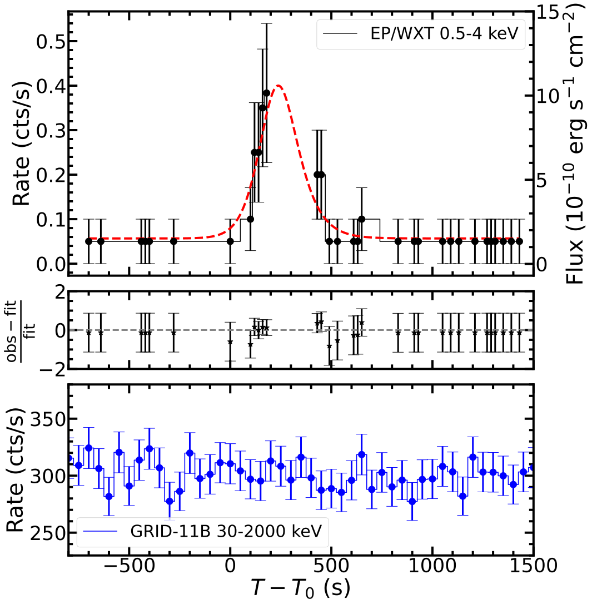
图注：EP241206a 耀发期光变。上图为 WXT 数据，黑色误差棒表示测量，红虚线为最佳脉冲模型。中图为光变拟合残差，下图为同时段 GRID-11B 光变，未见耀发活动。
怎么看这张图：留意 WXT 覆盖分段及残差。GRID 未见耀发需要结合其通量上限，其他高能卫星还有观测覆盖空缺。 直接支持短时光变与同时高能覆盖的实际限制。
来源与置信度：arXiv HTML；source verified；https://arxiv.org/html/2611.21369v1/Figure2.svg
图3
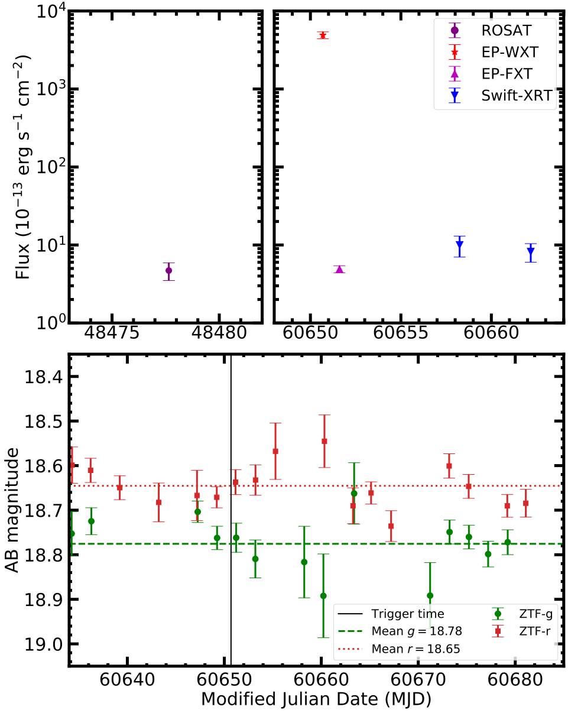
图注：长期光变。上图为 ROSAT（紫）、WXT（红）、FXT（品红）和 Swift-XRT（蓝）的去吸收 X 射线通量，下图为 ZTF 的 g 波段绿圆和 r 波段红方。黑竖线标出耀发触发时刻，绿虚线和红点线为图示光学测量的平均星等，分别为 18.78 和 18.65。
怎么看这张图：先比较短耀发和历史／后随弱持续源，再看同期光学没有明显增强。不同仪器原始波段不同，精确光度比使用文中的谱换算。 建立极端振幅、持续对应体及光学限制的时间基线。
来源与置信度：arXiv HTML；source verified；https://arxiv.org/html/2611.21369v1/Figure3.svg
图4
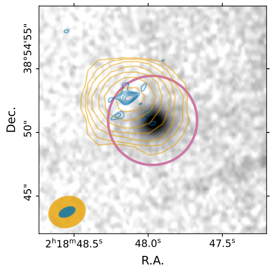
图注：EP241206a 周围多波段图像。背景为 Pan-STARRS i 波段，紫圈为 Swift-XRT 的90%位置误差。橙色 VLASS 轮廓为 rms 的4、8、16、32、64、128、256倍，蓝色 VLA 轮廓为4、8、16、32、64倍。两者 rms 分别为0.17和0.33 mJy/beam。
怎么看这张图：图像定位持续源并显示射电结构。Swift 误差圈不能替代耀发本身的 WXT 定位，关联仍依赖正文的条件概率。 展示候选持续源的定位与射电形态证据。
来源与置信度：arXiv HTML；source verified；https://arxiv.org/html/2611.21369v1/Figure4.png
强相关工作
Petropoulou、Giannios 与 Sironi 的磁重联团块模型将团块大小、相对喷流运动和辐射连接起来，是本文短时标与有效多普勒因子的直接背景。它展示一类机制可以产生快速高能耀发，本文则将该机制用作 EP241206a 的数量级解释，尚未对该源做完整的专门宽带计算。对应文献为 arXiv:1606.07447。
Gowri 等的双边脉冲函数来自伽马暴时间轮廓研究，本文借它描述软 X 射线光变。函数的适配成功表明能用一套平滑经验形式概括数据，并不因此将源分类为伽马暴。与已有 AGN 分钟级重联耀发工作对照时，真正待测的是同步多波段、团块束射和再次耀发统计，而非仅凭相近持续时间确认同一发动机。
同一事件 / 同类源线索：
相似工作：
（未提供）
基础理论 / 方法工作：
（未提供）
相反观点 / 张力线索：
（未提供）
3. Black Hole Superradiance and the Gravitational Auger Effect
- 来源：arXiv / astro-ph.HE
- 链接：https://arxiv.org/abs/2611.18833v1
- 作者：Joshua W. Foster, Nicholas L. Rodd
- 公告 / 来源日期：2026-11-17
- 阅读层级：重点精读
- 评分：novelty 8/10，importance 8/10，relevance 8/10，final 9.00/10
- 推荐理由：引入不可避免的纯引力Auger散射，改变超辐射云高能级演化与连续引力波预测，机制创新具体；精读核验适用质量与自相互作用条件。
中文题目：黑洞玻色子云会被自身引力耗散：引力 Auger 效应重估超辐射信号
做了什么：自旋黑洞能通过超辐射把极轻标量粒子积累成宏观云团，许多连续引力波预言依赖云团在饱和后长时间存在。Foster 与 Rodd 指出，即使标量四次自相互作用很弱，云内粒子间不可避免的引力仍可驱动能级散射：两颗粒子改变所占能级，其中一颗被黑洞吸收或逃逸。这个过程类似原子中的 Auger 跃迁，会把云的能量导向标量辐射与黑洞吸收。
作者计算包含黑洞反冲的散射率，先分析211与322两个能级，再用33能级网络演化黑洞质量、自旋和云占据数。在典型恒星质量黑洞示例中，211云饱和后的耗散大幅加快，322云又被更高能级及径向泛频限制，连续引力波可见谱线的预期数随之显著下降。结果基于小引力耦合、近似氢原子能级和占据数速率方程；新的总体自旋限制仍需专门的人口统计分析。
为什么重要：过去常用标量四次耦合的大小区分弱相互作用与强相互作用云，但引力本身提供了最低限度的能级耦合。本文提出的机制改变的是云形成之后能量如何流失，以及高能级能积累多少粒子，直接关系到连续引力波和双星晚期旋近信号的持续时间。它也显示，对不同观测量的影响可以不同，初始黑洞自旋损失保留，并不保证云团信号同样保留。
理论 / 观测 / 仪器方法价值：可借鉴的是从二体相互作用出发，计算满足能量和角动量选择规则的散射通道，再把占据数、黑洞质量与角动量联立演化。黑洞反冲会改变矩阵元的符号和干涉，径向高能级则能通过粒子转移反作用于低能级。作者还用扩大能级集合的检验区分两能级直觉与多能级动力学，适合用来审查其他存在宏观占据和非线性耦合的粒子云模型。
为什么应该关注：这项工作关系到如何把引力波未探测或黑洞自旋测量转成极轻粒子的约束。若采用旧的长寿命云预测，可能高估某些恒星质量黑洞的连续引力波可见性；对只依赖211阶段自旋损失的部分超大质量黑洞约束，影响又可能较小。值得关注的是后续的相对论散射率、云自能频移和总体自旋重分析，以及新一代引力波探测器能否覆盖更短或更弱的信号。
展开详细解读：文章讲解、背景、理论、重点章节、图表与相关工作
文章详细讲解
科学问题是极轻标量云形成后能否保持足够久。超辐射从旋转黑洞提取能量和角动量，先让某些束缚能级指数增长；通常把达到超辐射阈值后的云视为缓慢通过引力波湮灭耗散。若云还有更快的粒子转移和逃逸路径，观测寿命就会改变。
作者引入云粒子之间的长程引力散射，并把黑洞反冲与云自引力同时计算。在211+211到322加吸收伙伴的通道中，伙伴的总能量低于自由标量阈值，最终流入黑洞；反向的322+322到211加逃逸伙伴则能把非相对论标量带到无穷远。两类过程由玻色增强因子放大，因此微观引力耦合虽弱，宏观占据云仍可能受到明显影响。
两能级模型说明了最低能级的命运。在作者处理的纯引力范围，211通常仍能长到饱和，随后却主要通过散射耗散。加入更多能级后，322也会把粒子送往544及其径向泛频等状态，这些状态轮流参与准平衡，限制322继续积累。图3把云占据数和黑洞自旋同时画出，显示早期云的消失、高阶云的低占据以及较缓慢的后期自旋演化。
主要限制来自非相对论近似和网络模型。散射率按小耦合展开，作者忽略云自身引起的能级频移、不同能级的交叉湮灭及相干相位动力学；共振用有限寿命中间态的稳态响应处理。连续引力波谱线数量还依赖黑洞种群和搜索灵敏度，因此论文给出的巨大抑制应作为具体模型预测理解。它要求重算一些约束，尚未完成所有已有自旋结果的统一修订。
关键结果是怎么做出来的
第一步建立引力原子的近似。取自然单位，黑洞质量与标量质量决定无量纲耦合，耦合较小时云半径远大于黑洞尺度，束缚波函数近似氢原子态。能级用主量子数、角动量和其投影标记，211和322是研究中最重要的两个初始超辐射模。
第二步计算二体散射矩阵元。关键细节是云自引力之外还要保留黑洞反冲。原子中的原子核反冲通常很小，引力体系却因引力荷与质量的关系而不能按相同理由忽略。作者发现反冲抵消均匀引力部分，留下潮汐作用，使某个通道的纯引力矩阵元系数改变符号；这决定了与吸引性四次耦合发生破坏性干涉的可能。
第三步用能量守恒判断伙伴粒子的去向。两个211产生一个322时，另一粒子的能量低于自由阈值，形成黑洞吸收通道；两个322产生一个211时，伙伴则可以逃逸。作者使用相应的边界条件求波函数及速率，再把初始占据、末态玻色增强和自发项写进速率方程。
第四步比较云耗散与增长时间。在初始质量10个太阳质量、自旋0.9、耦合0.1的示例中，纯引力散射使211饱和后的占据数在约十万年内降到峰值的千分之一，无散射比较约需五亿年。这个数值对比属于特定参数轨迹。两能级模型对211的主要耗散有效，但对后续322演化不足，须加入高能级和径向泛频。
第五步检查33能级网络。补充材料对409个额外候选能级估计可能的增长，再把可能相关的能级加入演化。在所测黑洞质量、自旋和耦合网格中，211、322占据数与自旋历史保持亚百分比一致。这支持当前网格内能级截断的稳定性，不能同时验证被忽略的相对论效应和相干共振。
第六步连接观测。在沿用论文指定的黑洞种群和 Advanced LIGO 设计灵敏度搜索模型时，211可见谱线数的乐观上界由约一万条降至任意质量处少于约0.05条；322也明显减少。图4的带宽表示种群假设变化。作者同时指出较高耦合端的散射率更不可靠，自旋约束的净变化还没有人口统计结论，所以不能从可见谱线下降直接宣布所有超辐射约束失效。
展开背景、理论、公式、模型和章节导读
背景知识
旋转黑洞可以放大符合频率条件的玻色波。极轻有质量场又能被引力束缚在黑洞周围，于是波在束缚区反复作用并增长，形成类似原子的离散能级。云的宏观粒子数来自黑洞旋转能，超辐射终止时的黑洞自旋与对应能级频率有关。
云产生连续引力波的一个机制是相同能级中的两颗标量粒子湮灭成引力辐射。信号强度取决于云中粒子数，观测到多少条信号还取决于每个云维持可见振幅的时间。即便黑洞曾经有效失去自旋，如果云随后很快通过其他路径耗散，连续信号的数量也会减少。
宏观占据改变了弱相互作用的实际重要性。散射率既包含微观矩阵元，也包含初态粒子对的数量和末态玻色增强。大量粒子聚集于同一能级后，弱的引力二体相互作用可能累积成快于某些引力波耗散的通道，必须比较完整速率和时间尺度。
Auger 效应的原子类比帮助理解能量转移。原子中的电子向更低能级跃迁时，可把能量交给另一电子，使其离开原子。黑洞云中的过程同样把一个粒子的能级变化与另一个粒子的去向耦合，但还增加了黑洞视界这个吸收边界，且黑洞反冲在引力矩阵元中具有重要作用。
基础理论 / 方法脉络
耦合强度由黑洞引力半径与标量康普顿尺度的比值控制。小耦合时，能级间距主要是非相对论束缚能，波函数近似氢原子型。主量子数越高，束缚越弱、空间尺度越大。径向泛频具有相同角结构但不同主量子数，因此可以在保留角动量选择规则的同时增加能量和空间重叠的通道。
超辐射增长需要模式频率低于其角动量投影乘黑洞视界角速度。云增长不断抽取黑洞角动量，直至黑洞转速降到相应阈值。不同能级的阈值不同，所以较高能级的积累会影响后期自旋演化，必须把黑洞参数与云占据数一同更新。
引力散射的矩阵元含长程云势和反冲项，四次标量相互作用则相当于局部接触项。不同空间核在不同通道中的重叠并不相同，因此调一个四次耦合只能取消特定通道。论文图2中的小相互作用窄区来自局部干涉，其他径向通道仍可工作，不能把单个矩阵元为零等同于云完全没有自耦合。
速率方程用占据数而非完整复振幅描述能级。它擅长比较长时间的非相干增长、湮灭和转移，却丢失相位关系。补充材料对近共振中间态加入精细结构、超精细结构和有限寿命来使速率有限，并明确把相干能级穿越和散射留待后续研究。
观测上的三个量要分别跟踪：黑洞已失去的角动量、此刻云中保留的粒子数、持续向外发出的辐射功率。吸收伙伴可把部分能量送回黑洞，逃逸伙伴则形成标量辐射。于是自旋损失、云寿命和引力波功率会沿不同路径变化，这正是本文不同观测预言受到不同影响的原因。
公式与推导
以下使用论文的自然单位 \(\hbar=c=1\)，以主文式4–8、两能级方程和补充材料IV为依据。首先定义引力耦合、尺度和小耦合能级，
\(M\) 为黑洞质量，\(\mu\) 为标量质量，\(a_0\) 是引力Bohr尺度。近似要求云在弱场、非相对论范围。模式增长还需满足
其中 \(\chi=J/(GM^2)\) 为无量纲自旋，\(m\) 为角动量投影量子数。黑洞失去角动量后 \(\Omega_H\) 下降，增长在阈值处停止。
在按Bohr长度和束缚能缩放的二体Hamilton量中，相关相互作用为
这里位置、动量为无量纲变量。第一项是黑洞反冲，第二项是云自引力，第三项是本文约定下的吸引性四次项。前两项同阶，必须合并计算跃迁。
令 \(1=211\)、\(2=322\)。吸收伙伴的能量由能量守恒得到
它不能作为自由有质量粒子传播到无穷远，进入黑洞吸收通道。相应总反应率为
\(A_H\) 是视界面积，\(N_i\) 是占据数，\(\mathcal I_G\simeq-0.0914\)、\(\mathcal I_\lambda\simeq0.00184\) 为本文算出的无量纲重叠系数。面积乘 \((\alpha\mu)^3\) 给出逆时间量纲；两个系数异号使特定吸引性四次耦合出现相消。
若写 \(\lambda=(\mu/f)^2\)，该通道的相消标度为
它约束这个通道的矩阵元，其他能级的重叠系数不同。排放通道 \(322+322\rightarrow211+\infty\) 也有类似占据因子，记其总反应率为 \(R_\infty\)。
为看清每次反应对粒子数的影响，可把两能级方程写成
\(S_i\) 为超辐射增长或重吸收项，\(\bar\Gamma^{\rm ann}\) 为去掉占据因子的引力波湮灭率。吸收反应一次消耗两颗211、增加一颗322，排放反应的计数相反。这些系数负责正确连接微观通道和宏观演化。
在大占据、两散射通道主导并达到准平衡时，
代回第一式得到211的非线性耗散，
这是饱和后、准平衡区间的近似解；322离开平衡、更多能级加入时，需要回到网络方程。它说明占据云可比只考虑引力波的模型更快耗散。
最后，黑洞本身必须随过程更新。多能级形式为
两个正负方向分别表示超辐射抽取与伙伴吸收返还。保留能量和角动量的去向，才能解释为什么云明显减少时，某些黑洞自旋约束仍保有灵敏度。
模型拟合 / 应用方法
本文是理论速率计算与数值演化，并未把一个已探测连续引力波源拟合成标量云。输入包括黑洞初始质量、自旋、标量质量及四次耦合，随后计算超辐射、引力波湮灭和各能级散射率，联立更新占据数、黑洞质量和角动量。模型预测由这些输入和近似共同决定。
两能级系统用于识别211的增长、饱和和散射主导耗散条件。之后构建33能级网络，加入可由已有云态显著供给的高能级与径向泛频。图3的两能级和全模型对照显示，仅满足低能级守恒并不足以预测后期322云量，因为通往高能级的转移可以持续调节它。
补充材料的截断检验先在已有演化轨迹上估计额外候选态可能增长到多大，再把达到保守阈值的候选态加入联立方程。作者在初始质量10个太阳质量、若干自旋和耦合点得到占据数与自旋的亚百分比一致性。这检查了所选条件下的能级集合，尚未涵盖相对论率修正、环境扰动或相位演化。
近共振通道特别敏感。氢原子谱有简并，朴素Green函数会在中间束缚态处发散。作者使用修正后的失谐与有限衰变宽度替换极点，再随黑洞演化重新计算。云自身引起的频移被忽略，共振的稳态处理也需要相干动力学进一步检验；耦合较大时，这些近似更可能影响量化结论。
图4的可见谱线数把演化与指定种群、银河黑洞分布及Advanced LIGO设计灵敏度搜索模型组合。阴影带表示种群假设范围，不能当作对实际已观测源数的置信区间。作者未完成全体自旋观测的人口统计重分析，因此新旧自旋约束变强还是变弱，必须按具体黑洞质量、能级和年龄分布重新计算。
重点章节 / 结果段落怎么读
主文引力跃迁部分先看Hamilton量中的黑洞反冲项，再比较式6的引力与四次项系数符号。重点理解均匀引力部分怎样被反冲抵消，以及为什么剩余潮汐作用影响相消位置。
两能级动力学部分沿211增长、322被散射供给、两通道准平衡、211耗散的次序阅读。把反应计数与占据数方程对照，确认哪个过程消耗两颗、哪个增加一颗。
图2用于定位耦合与自耦合参数区间。横轴标量质量和上方耦合轴依赖指定黑洞质量，纵轴是衰变常数的倒数，需特别注意方向。窄相消区与其他通道仍工作的区别很重要。
高能级部分结合图3，追踪322和各个n44径向态的轮流平衡，再看自旋曲线，理解早开始与慢演化为何可以同时发生。
补充材料II、IV、V分别解决共振怎样正则化、完整速率与黑洞方程怎样组装、能级截断怎样检验。这三部分决定主要数值图的可信范围。
观测含义部分最后读图4，区分云量/寿命预言、设计灵敏度下可见谱线数、尚待总体分析的自旋约束，保留小耦合与种群假设。
关键图表与解读
图2
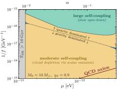
图注：211云的自耦合区间图。初始黑洞质量10个太阳质量、自旋0.9，演化时间为一百亿年。横轴为标量质量，顶端辅助轴为引力耦合，纵轴为标量衰变常数的倒数，单位GeV的倒数。颜色区分中等和强自耦合等动力学区间，灰区表示211不能在给定时间内饱和。斜线附近是吸引性四次相互作用与引力通道的相消标度，QCD轴子关系也画在图中。耦合大于约0.3时，氢原子近似和所选低能级模型的可靠性受限。
怎么看这张图：纵轴是1/f，因此向下对应更弱的四次相互作用。即使向这一区域移动，引力仍可把云带入散射主导耗散区。应把颜色读成指定初始黑洞条件下的演化分类，而非新的观测排除区域；相消只对具体通道成立。 解释不可关闭的引力耦合如何改变弱四次耦合极限
来源与置信度：arXiv HTML；source verified；https://arxiv.org/html/2611.18833v1/phase_attractive.svg
图3
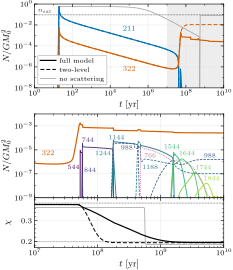
图注：初始质量10个太阳质量、自旋0.9、引力耦合0.1的黑洞与标量云演化。横轴为年，上两幅纵轴为按G乘初始黑洞质量平方归一化的能级占据数，下幅为黑洞无量纲自旋。实线为多能级全模型，虚线为两能级模型，灰线为无散射结果。上幅展示211与322，中幅展开322、544及其径向泛频n44、n88和766等能级，下幅虚点参考线标记211与322的初始阈值。
怎么看这张图：先从上图211下降寻找云耗散，再到中图看各径向态如何先后承载粒子，最后对照下图自旋继续降低的速度。多能级模型与两能级模型在后期322上的分离，说明高能级会反作用于主云；曲线来自给定参数的数值演化。 把散射通道、云占据数与黑洞角动量演化连接
来源与置信度：arXiv HTML；source verified；https://arxiv.org/html/2611.18833v1/occupations.svg
图4
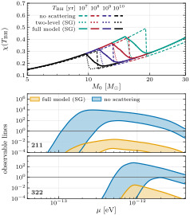
图注：忽略四次相互作用时，自引力散射对可观测量的模型预言。上幅横轴为初始黑洞质量，纵轴为给定年龄后的自旋，采用初始自旋0.99、标量质量一万亿分之一eV，线型比较无散射、两能级和多能级自引力模型，不同颜色代表不同黑洞年龄。下两幅横轴为标量质量、纵轴为Advanced LIGO设计灵敏度下预期可见连续引力波谱线数，分别对应211和322；蓝带为无散射，橙带为多能级自引力。带宽覆盖论文采用的黑洞种群模型，仅计初始引力耦合不超过0.3的黑洞。
怎么看这张图：下部先看一条可见谱线的水平量级，再比较蓝橙模型带的高度，理解云寿命与占据数改变如何压低预期数目。上图是理论自旋轨迹，对自旋观测约束的净影响还要人口统计分析，无法由下图的强烈抑制直接推出。 区分连续引力波可见性与尚待重分析的自旋约束
来源与置信度：arXiv HTML；source verified；https://arxiv.org/html/2611.18833v1/observables_single.svg
强相关工作
Baryakhtar 等2021年研究了具有四次自相互作用的标量超辐射，建立了弱、中、强自耦合区间及两能级动力学。本文沿用这一问题框架，把无法任意关闭的云自引力和黑洞反冲加入同样的散射通道，并进一步检验高能级网络。因此差异发生在云粒子之间的动力学，而非超辐射增长条件本身。
Detweiler 1980年的Klein–Gordon黑洞束缚态与增长率，以及Yoshino和Kodama 2014年的云引力辐射计算，是论文速率与观测连接的基础来源。新文章所预言的可见性变化，来自在这些增长和辐射过程之间增加新的能量流失路径。阅读这些基础计算时，应注意其小耦合或平直时空辐射近似在本网络中如何组合。
对黑洞云影响双星旋近和对极轻标量施加自旋限制的既有工作，本文主要提出重新分析的需要。更短的211云寿命、更低的322占据与仍保留的初始自旋损失，对不同研究具有不同后果。具体观测约束的修订要保留原分析的种群、年龄和环境条件。
同一事件 / 同类源线索：
相似工作：
基础理论 / 方法工作：
相反观点 / 张力线索：
（未提供）
相关简报
1. Non-thermal emission from molecular clouds illuminated by continuous cosmic-ray accelerators: application to the stellar cluster W43
- 来源：arXiv / astro-ph.HE
- 链接：https://arxiv.org/abs/2611.21317v1
- 作者：Alexandre Inventar, Enrico Peretti, Naomi Tsuji, Stefano Gabici
- 公告 / 来源日期：2026-11-17
- 阅读层级：相关简报
- 评分：novelty 7/10，importance 7/10，relevance 10/10，final 9.05/10
- 推荐理由：连续宇宙线注入照亮分子云的解析标度与W43拟合，把各向异性扩散与能量预算直接联系到高能观测。
中文题目：连续宇宙线源怎样照亮分子云——W43 的扩散与能量预算
问题、方法与结论：作者从连续和脉冲质子注入的传播解出发，计算周围分子云的强子伽马射线，并将模型用于 W43 星团附近的 GeV–TeV 扩展辐射。给定星团机械功率、年龄、云质量距离比和约 60 pc 源云间距，连续各向同性扩散需要相对银河平均减慢约一至两个数量级；沿磁通管的近一维传播可在较大扩散系数下保持足够的局部质子密度。所示模型的质子截止约为 0.4 PeV。
意义与贡献：连续注入与几何约束共同影响宇宙线密度。分子云的高伽马亮度可以来自较慢扩散，也可以来自粒子只能沿有限通道传播，两者具有不同的全局能量要求。因此看到高亮分子云，不能只以一个低扩散系数确定局部湍流被增强。
可借鉴之处：本文把加速效率与扩散系数的组合量直接连接到 Fermi、LHAASO 和 H.E.S.S. 谱，并加入气体形态及 Chandra 扩展 X 射线上限。不同仪器使用不同扩展区域，H.E.S.S. 点较低不能简单当作能谱冲突。应用于 IACT 分子云搜索时，还应修正点源灵敏度对大角尺度源的乐观估计。
局限与关注点：W43 与云的三维距离尚未测定，多个云参与可改变有效靶质量，星团动力学功率与年龄也有不确定性。连续注入只是比所示单次超新星方案略自然，后者与轻子情形均未被严格排除。作者的轻子拟合需较低磁场和较乐观电子效率，最低能 GeV 点也有背景误差。它给出传播参数的条件约束，尚未独立证明 W43 已加速质子超过 PeV。
图8
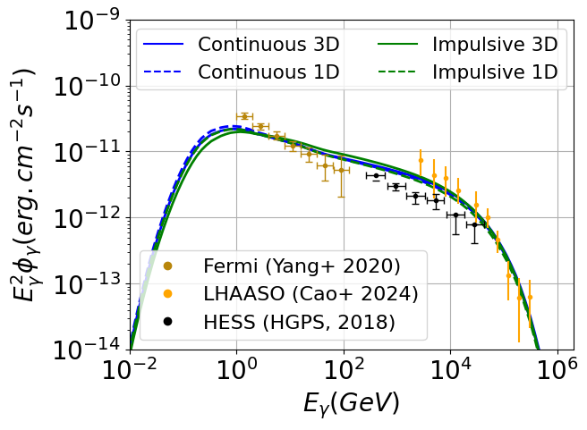
图注：W43区域的伽马射线模型能谱与Fermi、LHAASO和H.E.S.S.测量比较。横轴为伽马射线能量，单位GeV；纵轴为能量平方乘微分光子通量，单位erg每平方厘米每秒。蓝色为连续注入，绿色为脉冲注入，实线和虚线分别对应三维与一维传播计算。仪器数据点及其误差、不同测量区域的口径见正文。
怎么看这张图：多组曲线能拟合同一谱，说明效率、传播几何和扩散仍退化。不同仪器角范围不同，H.E.S.S.偏低不能直接解释为测量矛盾。 将连续／脉冲及各向同性／各向异性传播直接连接观测。
来源与置信度：arXiv HTML；source verified；https://arxiv.org/html/2611.21317v1/w43_fit_new_continuous_impulsive.png
2. Conditions for mass-loading: Investigating jet-disk material exchange in strongly magnetised accretion flows
- 来源：arXiv / astro-ph.HE
- 链接：https://arxiv.org/abs/2611.21401v1
- 作者：Subhrat Praharaj, M. T. P. Liska, Sera B. Markoff, Koushik Chatterjee, Bart Ripperda, Lorenzo Sironi, and, Aylecia S. Lattimer
- 公告 / 来源日期：2026-11-17
- 阅读层级：相关简报
- 评分：novelty 8/10，importance 7/10，relevance 9/10，final 9.00/10
- 推荐理由：阅读全文后改简报。示踪及磁力线形态支持喷发期鞘层供料机制；量化仅限最强第四次喷发，附录法向通量使用未归一化磁化梯度且未明确移动边界速度，Bernoulli上下标及质量积分定义亦需澄清。保留机制创新8，重要性7，不将诊断流量比当已测注入效率。
中文题目：磁通喷发能把吸积盘物质送进喷流鞘层吗
问题、方法与结论：强磁场喷流若产生强子辐射，需要解释质子怎样穿过磁屏障。作者在自旋 $a=0.9375$ 的磁阻塞盘三维广义相对论磁流体模拟中，分别示踪初始盘物质和数值密度下限注入物质。磁通喷发将原喷流物质带入盘内，磁通管边缘的指状结构再混入盘物质，并沿磁结构接近喷流鞘层。最强第四次喷发中，20–80 引力半径附近出现盘示踪物质进入高磁化区域的增强，进入轴向核心的证据有限。
意义与贡献：这提供了强磁化吸积流中间歇补充重子的具体候选路径，使喷流局部的组成可以随喷发改变。它支持从盘到鞘层的物质供应机制讨论，尚未计算非热质子加速、中微子产额或伽马耀发。用数值下限物质代表可能的电子正电子组分也只是物理解释，模拟本身没有求解成对产生。
可借鉴之处：可借鉴的是将物质来源示踪、磁化分箱质量、边界流量和三维磁力线形态联合检查，避免把密度下限注入误记为盘物质。图 3 的净流量变化可与图 12 的磁化和盘密度沿线变化对照，单独的高磁化质量增加不足以确认跨界输运。
局限与关注点：全文定量诊断仍需谨慎。附录把未归一化的磁化梯度与速度收缩后称为法向速度，未明确处理移动等值面的相对速度，Bernoulli 指标也出现上下标不一致，图 3b 的实轴还与英文图注所称的对数轴不符。细致流量分析限于最强一次喷发，尚无全部周期统计或完整收敛检验。因此保留定性机制，暂不采用作者流量比作源级重子注入效率，也不将理想磁流体重联速率直接匹配观测耀发时长。
图3
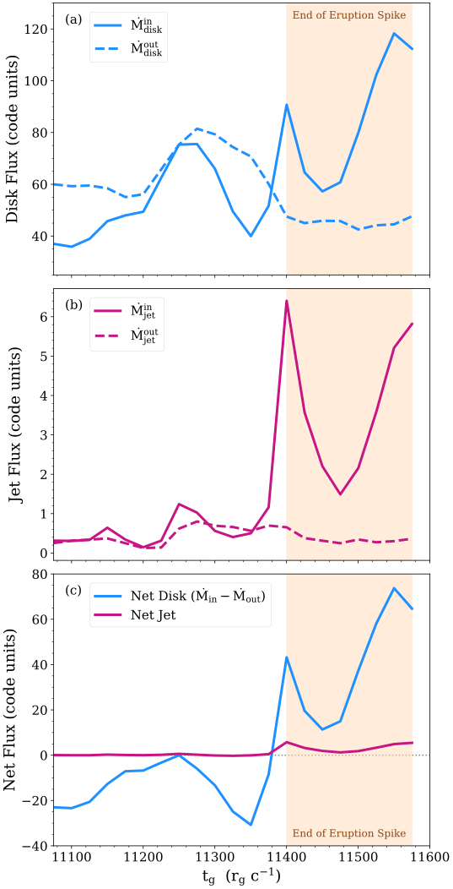
图注：最强第四次磁通喷发期间，穿过磁化参数 σ=1 定义边界的示踪加权流量随时间变化。a为盘物质流入实线与流出虚线，b为密度下限／原喷流物质的流入与流出，原英文图注称b纵轴为对数，但实际刻度0至6等距，按线性轴阅读；流量为模拟单位。c为流入减流出的净量，蓝色为盘物质、红色为原喷流物质。阴影标出磁通管将混入盘物质带到边界的阶段。
怎么看这张图：盘示踪净量在喷发期转正支持供料图像，但图中量采用作者梯度诊断，法向归一与移动边界仍需澄清，不直接换算成真实源注入效率。 展示喷发期物质交换的时间证据并保留量化限制。
来源与置信度：arXiv HTML；source verified；https://arxiv.org/html/2611.21401v1/funnel_flux_mnras_asl.svg
3. Simultaneous tests of post-Newtonian inspiral using GW250114 and GW250207
- 来源：arXiv / astro-ph.HE
- 链接：https://arxiv.org/abs/2611.20738v1
- 作者：Saurabh Kumar, Parthapratim Mahapatra, Ish Mohan Gupta, M. Saleem, B. S. Sathyaprakash, K. G. Arun
- 公告 / 来源日期：2026-11-17
- 阅读层级：相关简报
- 评分：novelty 7/10，importance 8/10，relevance 8/10，final 8.70/10
- 推荐理由：两例高信噪引力波同时放开八个PN系数并用PCA识别可测三维子空间，具体推进联合检验；零偏离需限定于主成分。
中文题目：两次强引力波事件同时检验八个后牛顿相位系数
问题、方法与结论：作者利用 GW250114 和 GW250207 的高信噪比，允许 0 至 3.5 阶后牛顿展开中的八个相位偏离参数同时变化，并与双星质量、自旋和方向等共同进行贝叶斯推断。原参数之间高度相关，作者将后验协方差对角化，找到数据真正约束的主成分。以先验到后验的信息增益超过 0.1 bit 为标准，两例事件都只有前三个组合得到明显约束，且均与广义相对论的零偏离相容。
意义与贡献：方法让多个阶次能够同时存在偏离，避免逐项检验中将其他偏离固定为零的条件。得到的却是系数线性组合，所以前三个主成分相容于零不能改写为八个原始系数分别被精确测定。较强事件为这种高维零检验提供了实际可用的数据。
可借鉴之处：值得复用的是在同一旋转基底内同时变换先验与后验，再判断信息增益，避免把主成分先验误当成均匀分布。接近等质量、无自旋的数值相对论零噪声注入也用同一流程检验波形及推断，得到相容于零的主成分。
局限与关注点：当前验证覆盖有限源参数与波形族，不能由一次注入概括高自旋或大质量比系统。GW250207 采用特定较宽标定先验，波形系统和先验仍影响结果。主成分基底又随事件参数变化，各事件的数值组合需要先对齐才可组合。未来要比较具体修正引力模型，应映射完整相关后验，避免把某个主成分误当作独立理论耦合。
图1
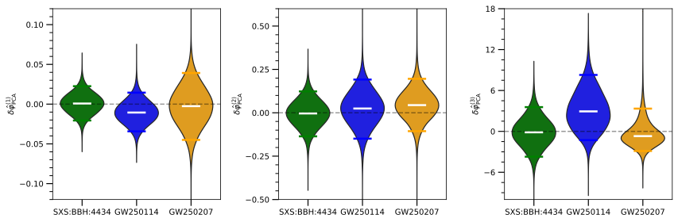
图注：三个主成分偏离参数的后验小提琴图。绿色为SXS:BBH:4434数值相对论波形的零噪声注入，蓝色为GW250114，橙色为GW250207。白横线标中位数，彩色横线标90%可信区间，灰虚线为广义相对论零偏离。各主成分组成见表1。
怎么看这张图：检验每个组合是否与零相容，同时记住三个主成分不是八个原始偏离系数逐一独立的测量。 展示实际可测子空间及基线波形验证。
来源与置信度：arXiv HTML；source verified；https://arxiv.org/html/2611.20738v1/individual_1st_2nd_3rd_PCA_v5.svg
4. Large-Scale Cosmic-Ray Anisotropy in the TeV Regime: Peak Observables and a Propagation-Model Interpretation
- 来源：arXiv / astro-ph.HE
- 链接：https://arxiv.org/abs/2611.19989v1
- 作者：Hao-Kun Chen, Xu-Lin Dong, Qi-Ling Chen, Shu-Wang Cui, Yi-Qing Guo
- 公告 / 来源日期：2026-11-17
- 阅读层级：相关简报
- 评分：novelty 7/10，importance 7/10，relevance 9/10，final 8.70/10
- 推荐理由：统一多谐波峰值定义减小三实验相位差并联结核谱与各向异性传播模型，对宇宙线分析直接有用；局部源归因仍有退化。
中文题目：宇宙线各向异性的峰方向，与第一谐波相位有什么不同
问题、方法与结论：作者统一处理 ARGO-YBJ、Tibet ASγ 和 HAWC 的赤经相对强度分布，用多谐波重建寻找真正的最大过量位置。三实验在 11–22 TeV 范围内，已公布第一谐波相位跨度约 22.6 度，新定义峰方向跨度约 7.5 度。较低能量峰方向集中在约 60–70 度，较高能量向约 250–300 度过渡。作者再以银河背景、Geminga 相关局部源和沿本地星际磁场的各向异性扩散解释核谱与峰方向。
意义与贡献：非正弦分布中的第一谐波相位会同时受到亏损区影响，未必指向最大过量。把两个观测量分清，可以避免把定义差异直接解释为实验不一致。新峰指标对比较形态有用，原来的偶极相位仍有自己的物理意义，不能由跨度较小就认定新指标具有更低总误差。
可借鉴之处：作者对每个能段重新选择谐波阶数，并在一万次模拟中重复选阶和提峰，包含了部分选模波动。高能和翻转区峰可能变宽或呈多峰，不能只报告一个最佳赤经。对 IACT 及空气簇射各向异性研究，这种把定义、响应和统计选模分开的流程值得参考。
局限与关注点：HAWC 数据来自图像色标数字化，一部分误差采用统一泊松估计，尚未包括完整曝光权重、数字化系统和能段相关。传播模型本身以偶极近似映射峰方向，没有再现观测中的全部高次结构。Geminga 的角色因而是一种可行解释，尚非唯一局部源识别，跨实验还需原始事件响应与共同系统误差验证。
图2
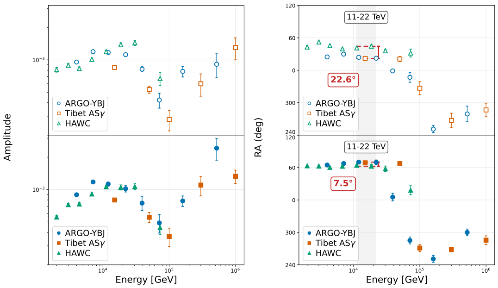
图注：三实验联合比较。左上为第一谐波振幅，右上为第一谐波相位，左下为重建最大振幅，右下为最大过量的赤经。红框标示11–22 TeV中三实验相位与峰赤经的圆周跨度，数据取自ARGO-YBJ、Tibet ASγ和HAWC。
怎么看这张图：上下两行的方向定义不同。跨度从22.6度缩至7.5度展示定义对一致性的影响，不能直接当作误差条缩小。 核心观测量变化及跨实验比较。
来源与置信度：arXiv HTML；source verified；https://arxiv.org/html/2611.19989v1/figure_2.svg
5. Unveiling Hidden X-ray Broad Line Region in Centaurus A: Broadband Analysis with XRISM and NuSTAR
- 来源：arXiv / astro-ph.HE
- 链接：https://arxiv.org/abs/2611.19327v1
- 作者：Yuya Nakatani, Yoshihiro Ueda, David Bogensberger, Taishu Kayanoki, Yasushi Fukazawa, Luigi Gallo, Richard Mushotzky, Tahir Yaqoob
- 公告 / 来源日期：2026-11-17
- 阅读层级：相关简报
- 评分：novelty 7/10，importance 8/10，relevance 8/10，final 8.70/10
- 推荐理由：XRISM与NuSTAR联合物理反射模型分离Cen A的三速度铁线成分，给出隐蔽X射线宽线区及覆盖约束；需保留模型分解和质量标度限制。
中文题目：Cen A 的铁线揭示分层反射区，但尺度依赖动力学解释
问题、方法与结论：作者联合同时取得的 XRISM 与 NuSTAR 能谱，用辐射转移反射模型同时解释连续谱和荧光铁线。与同批 XRISM 数据已有的经验展宽分析相比，新工作引入物理反射结构并将环面铁线分为两种速度宽度，得到约 310、1900 km/s 的半高全宽，以及约 6000 km/s 的 X 射线宽线成分。额外环面速度分量明显改善铁线附近残差，模型比较也支持这种更丰富的速度结构。
意义与贡献：高分辨线形与高能反射连续谱互补，使遮蔽核中难以直接看到的反射气体具有新的约束。宽线强而反射隆起较弱，倾向于较大覆盖比例和有限柱密度。作者估计宽线区位于约 0.014 pc、覆盖约 0.11–0.36，但半径需采用黑洞动力学质量和开普勒运动，尚非空间分辨成像。
可借鉴之处：可借鉴的是在保持总反射线强度的条件下检验多速度结构，再用宽带连续谱检查覆盖比例与柱密度退化。原文将环面倾角固定并检查合理变化，绝对铁丰度也固定，所以不能把全部几何和化学量视为独立自由测量。
局限与关注点：两种环面速度可以概括非均匀速度分布，未必对应两层清晰边界。宽线区质量的区间还固定了半径与厚度，未包含其全部误差。将铁线宽度迁移到光学宽线质量关系得到的黑洞质量，也受区域是否共空间、取向和光度换算影响。对 Cen A 喷流供给与核区辐射研究，这些结果提供环境条件，尚不能直接推出非热粒子加速效率。
图5
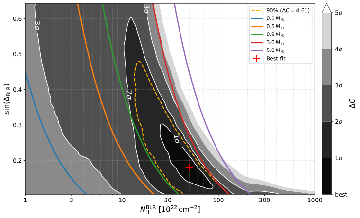
图注：宽线区几何参数的置信轮廓。横轴为径向氢柱密度，单位为10的22次方每平方厘米，纵轴为角厚度参数的正弦sin(Δ_BLR)。灰阶表示相对最佳位置的C统计量差，白色轮廓标记1、2、3倍标准差，黄色轮廓为两参数联合90%区域（ΔC=4.61），红十字为最佳位置。蓝、橙、绿、红、紫线依次为0.1、0.5、0.9、3、5个太阳质量的等质量线；宽线区半径与径向厚度采用文中固定值。
怎么看这张图：先看覆盖角与柱密度的退化方向，再沿质量曲线理解约束区间。质量置信范围仅传播这两个拟合参数，没有包含固定半径和径向厚度的误差；因而不能将图中范围解释成包含全部系统误差的总质量精度。 展示谱反射对宽线区覆盖与柱密度的联合约束及质量模型依赖。
来源与置信度：arXiv HTML；source verified；https://arxiv.org/html/2611.19327v1/Figure_5_NHContour.svg
6. Rest-frame annihilation lines of $\sim70$ GeV WIMPs in 23,000 stacked galaxy clusters
- 来源：arXiv / astro-ph.HE
- 链接：https://arxiv.org/abs/2611.21595v1
- 作者：Uri Keshet
- 公告 / 来源日期：2026-11-17
- 阅读层级：相关简报
- 评分：novelty 7/10，importance 7/10，relevance 8/10，final 8.35/10
- 推荐理由：大量星系团静止系谱线盲扫新增检验，但单样本trial校正显著性有限、联合历史样本需核实独立性；先核全文再判定是否可保留。
中文题目：星系团静止系伽马线搜索出现候选结构，显著性取决于检验口径
问题、方法与结论：作者将 16.3 年 Fermi-LAT 数据按 23343 个高银纬星系团的红移转换到静止系叠加，去除平滑背景后搜索单线，以及由暗物质湮灭运动学固定间距的三线和九线模板。新星系团样本的约 70 GeV 三线候选在盲扫试验修正后约为 2.8σ，九线组合约为 3.4σ。改变红移、随机方向和场区域的零假设检验用于判断结构是否随星系团静止系增强。
意义与贡献：方法把天体红移当作区分真实源谱与观测系结构的诊断，并显式处理相邻模板共享光子的协方差。这是一项可复查的新样本检验。文中超过 5σ 的数值涉及与此前特定线搜索的联合及相应先验，不能按标题直接解读成该新样本独立发现暗物质。
可借鉴之处：值得关注的是让模拟零假设经过同样的去趋势、模板扫描和最大值选择，校准局部统计量到全局概率。源注入模拟也揭示背景拟合会吸收部分谱线，适合评估灵敏度和截面偏差。作者另外讨论的信号损失补偿显著性属于扩展估计，应与标称全局检验分开报告。
局限与关注点：所有样本共享 LAT 能标系统，历史检验的独立性、星系团剖面及线分支比都影响解释。候选强度随理论预期团信号标度的关系还有差异，两个较弱线通道单独可与零相容。本文对截面和质量的误差口径也不同于完整高斯置信区间。后续需要独立选择、完整响应及其他暗物质限制的共同检验，当前宜作为候选谱结构跟进。
图12
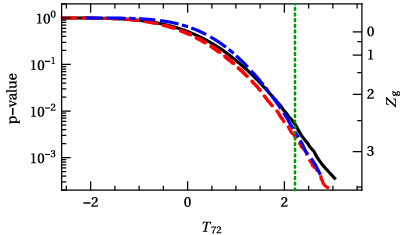
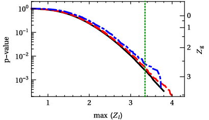
图注：星系团叠加样本S的零假设分布。左图为预先固定T72模板，右图为盲扫三线模板最大局部统计量。左轴为零假设叠加达到给定值的尾概率，右轴为对应全局Z值。黑实线为泊松蒙特卡洛、红虚线为随机经度、蓝点划线为红移置换，绿点线标观测值。
怎么看这张图：固定模板与盲扫属于不同检验。比较三种零假设给出的尾部，再使用相应全局概率，不把局部峰或注入损失补偿值当作独立发现显著性。 展示候选谱线的核心概率校准与试验修正。
来源与置信度：arXiv HTML；source verified；https://arxiv.org/html/2611.21595v1/LAT_Stack_Fig3a_Nulls_F5.png；https://arxiv.org/html/2611.21595v1/LAT_Stack_Fig3b_Nulls_F5.png
7. A 3+1 formalism for self-similar expanding grids in computational relativistic and Newtonian magnetohydrodynamics
- 来源：arXiv / astro-ph.HE
- 链接：https://arxiv.org/abs/2611.20865v1
- 作者：N. Bucciantini, L. Del Zanna
- 公告 / 来源日期：2026-11-17
- 阅读层级：相关简报
- 评分：novelty 7/10，importance 7/10，relevance 8/10，final 8.35/10
- 推荐理由：用3+1度规变换构造膨胀坐标保持守恒及磁场无散度，并与标准测试对照，具可实现的数值方法增量。
中文题目：通过时变度规实现自相似膨胀网格
问题、方法与结论：作者将物理坐标写成计算坐标乘随时间变化的伸缩因子，在广义相对论磁流体的 3+1 分解中，把网格膨胀编码为度规、平移向量及相应源项。计算格点拓扑仍固定，已有守恒求解器因此可以覆盖不断扩大的流体结构。文章在一维激波管、球形爆炸波、二维磁化爆炸与柱对称喷流中，对照固定坐标和膨胀坐标结果，主要结构总体一致。
意义与贡献：当结构从很小尺度向外扩展时，固定大计算域会把大量早期格点用于未受扰动区域。跟随整体尺度扩张能够提高结构内的平均有效分辨率。球形爆炸波例中，同为 400 格点的膨胀方案可接近更多固定格点的结果，收益大小仍依赖结构和需要解析的特征。
可借鉴之处：方法适合已有完整时变度规接口、守恒形式和磁场约束输运的代码。实现需要一致更新空间度规、平移向量、导数和边界，不应将作者的一行度规修改表述理解成任意流体代码无须适配。发散约束的保持也依赖正确的感应方程离散。
局限与关注点：现有测试主要是平直时空中的相对论与牛顿流体。强引力、坐标奇点以及复杂局部收缩扩张仍需专门处理，自相似全局伸缩对任意形变也有范围限制。湍流细节随有效分辨率改变，图中吻合不能替代逐问题收敛研究。对超新星遗迹、外流和爆炸波模拟，值得先用标准测试验证物理坐标回映及边界通量，再应用于长时间演化。
图2
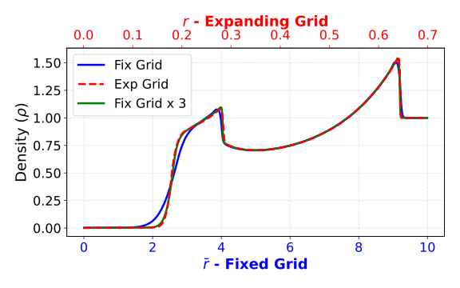
图注：一维球形爆炸波的共动密度比较。t=12时，蓝实线为固定坐标400格点，红虚线为膨胀坐标400格点，取τ=0.55、κ=0.85；绿线为固定坐标1200格点的较高分辨结果。
怎么看这张图：检查接触面与激波位置，再比较细结构。等效分辨率收益依赖本次演化和特征，不直接泛化为通用计算加速。 展示膨胀坐标对动态尺度覆盖的数值收益。
来源与置信度：arXiv HTML；source verified；https://arxiv.org/html/2611.20865v1/BLS.svg
8. The Effect of Asphericity to the Inference of Supernova Circumstellar Environment from Radio Observations
- 来源：arXiv / astro-ph.HE
- 链接：https://arxiv.org/abs/2611.20672v1
- 作者：Ryotaro Chiba, Zhengwei Liu, Takashi J. Moriya, Xiaolong Yang
- 公告 / 来源日期：2026-11-17
- 阅读层级：相关简报
- 评分：novelty 7/10，importance 7/10，relevance 8/10，final 8.35/10
- 推荐理由：以覆盖因子改变射电CSM反演，定量显示强非球形仍不能大幅降低总壳质量；与同日SN2020eyj观测稿互补并需交叉说明。
中文题目：非球形能把超新星的星周物质量降低多少
问题、方法与结论：作者把星周物质限制在给定立体角覆盖比例内，联立激波演化、电子注入、冷却和吸收同步辐射，比较再现同一射电亮度需要的总质量。对典型 II、Ibc 和 Ia 相互作用超新星模拟观测，质量对覆盖比例的依赖较浅。覆盖范围变小虽然缩小发射体积，却要求更高密度，抵消了大量减重收益。在 SN 2020eyj 的光变拟合中，覆盖比例降到 0.1 时质量约为球对称解的一半。
意义与贡献：这直接检验了以非球形结构缓解前身失质量预算的常用解释。结果说明几何压缩与总质量之间不能简单线性换算。其主要贡献是同一辐射和动力学处方内改变几何的受控比较，质量本身仍受电子谱、磁场能量比例和密度剖面影响。
可借鉴之处：对 SN 2020eyj，作者由晚期射电谱取较硬的电子指数约 2.38，固定电子和磁场能量分数为 0.1、0.01，分别拟合有外边缘与延伸密度分布。图 6 将覆盖比例与 $3\times10^{17}$ cm 内的质量连接，适合把几何误差同其他模型误差分开诊断。
局限与关注点：本文球对称质量约为 $8$–$13\times10^{-3}$ 太阳质量，覆盖比例 0.1 时约为 $3$–$7\times10^{-3}$，显著低于同日 2611.20669 的厚壳结果。这不是仅改变几何产生的差别，电子谱和动力学等假设也不同，不能把两篇合并成同一个质量结论。作者暂未处理复杂多成分密度及完整视角吸收，早期光学可能还探测到射电未覆盖的更内层高密物质。
图6
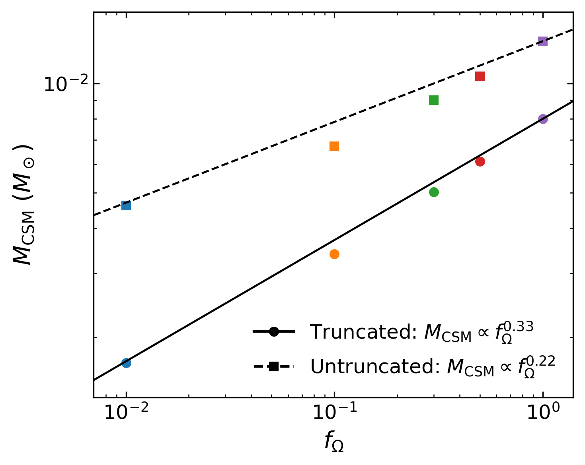
图注：SN2020eyj中，星周物质立体角覆盖比例与3×10^17 cm以内估计总质量的关系。实线表示具有有限外边缘的密度模型，虚线为延伸模型各自的幂律拟合，对应表3参数。
怎么看这张图：覆盖比例大幅减小时，质量只缓慢下降。两种曲线仍固定同一组电子与磁场参数，不覆盖其他辐射处方的系统差异。 直接量化非球形能否解决质量预算。
来源与置信度：arXiv HTML；source verified；https://arxiv.org/html/2611.20672v1/2020eyj_csm_asphericity_w7.png
9. Long-Term Radio Evolution of the Type Ia Supernova SN 2020eyj: Evidence for a Dense Helium-rich Circumstellar Shell
- 来源：arXiv / astro-ph.HE
- 链接：https://arxiv.org/abs/2611.20669v1
- 作者：Zheng-Wei Liu, Xiaolong Yang, Huanyuan Shan, Xuefei Chen, Peng Jiang, Xiangcun Meng, Friedrich K. Roepke, Ryotaro Chiba
- 公告 / 来源日期：2026-11-17
- 阅读层级：相关简报
- 评分：novelty 7/10，importance 8/10，relevance 7/10，final 8.35/10
- 推荐理由：Ia超新星SN2020eyj长达1300天射电演化约束氦富厚壳，直接触及前身失质量；壳质量应保留微物理及几何条件。
中文题目：SN 2020eyj 的长期射电演化与氦富星周壳
问题、方法与结论：作者将 SN 2020eyj 的 JVLA 射电监测延长到发现后约 1300 天，获得 1.5–10 GHz 多历元谱，并以定位和时变确认射电源与超新星对应。光变在早期较平坦后总体下降，低频谱有吸收转折。给定激波同步辐射处方，均匀厚壳模型对 3、6 GHz 分别得到约 0.32、0.37 太阳质量的星周物质，比简单风或均匀星际介质更能描述细节。
意义与贡献：与光学氦富而贫氢的相互作用特征结合，长期射电提供了 Ia 型超新星爆前失质量的独立诊断。厚壳结构对稳定恒星风和简单新星喷出模型提出要求。共同包层喷出是一类候选渠道，但壳内外半径所需的喷出时间、速度分布与并合到爆炸延迟之间仍有张力，不能由壳拟合直接确认前身。
可借鉴之处：可借鉴的分析包括用视场内稳定源校正历元间增益、将早期与晚期谱联合约束同步转折，再检验射电壳能否同时解释光学尾部。原文对两个频段的壳拟合给出后验，微物理比例、电子谱和壳厚共同进入质量估计。
局限与关注点：约 0.3–0.4 太阳质量属于本文特定球对称壳及磁场能量分数等条件。同日非球形分析 2611.20672 使用不同电子谱、动力学和密度分布，给出明显较低的质量尺度，两者尚需统一假设重拟合。应把这个分歧作为反演系统误差保留。早期两个 e-MERLIN 历元缺少同样的视场校正，第二组谱的低频转折也未直接测清，扩展样本才能判断该源是否代表常见 Ia 前身。
图4
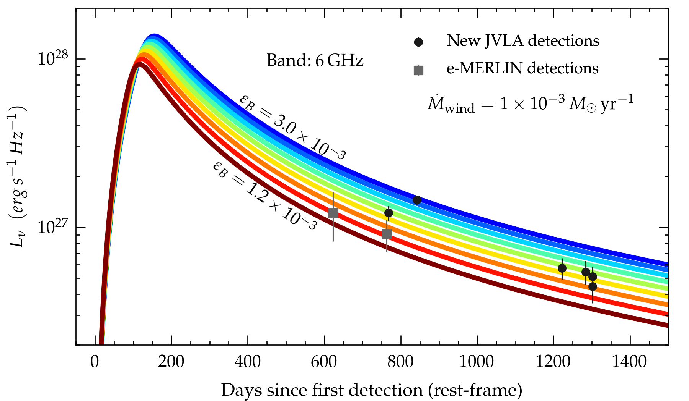
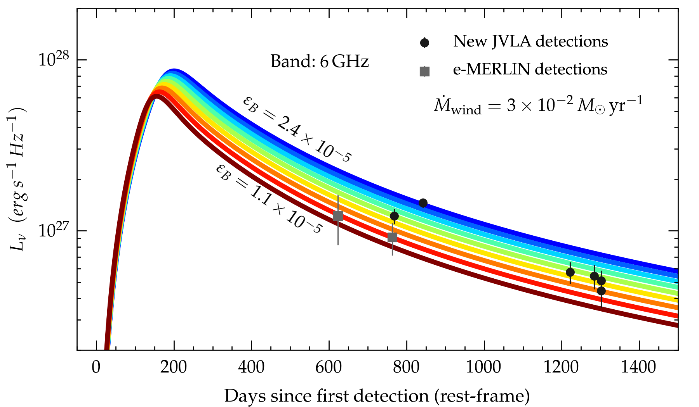
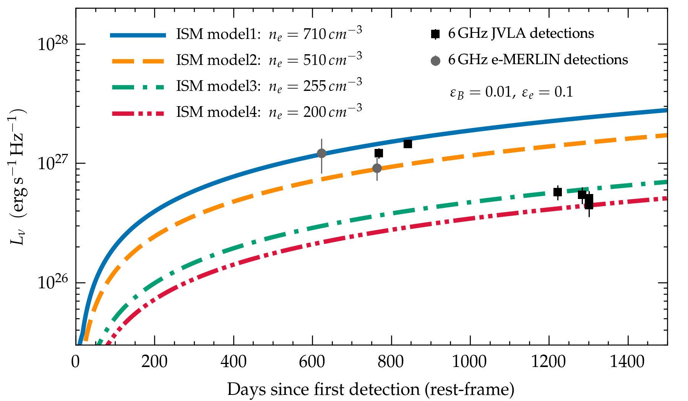
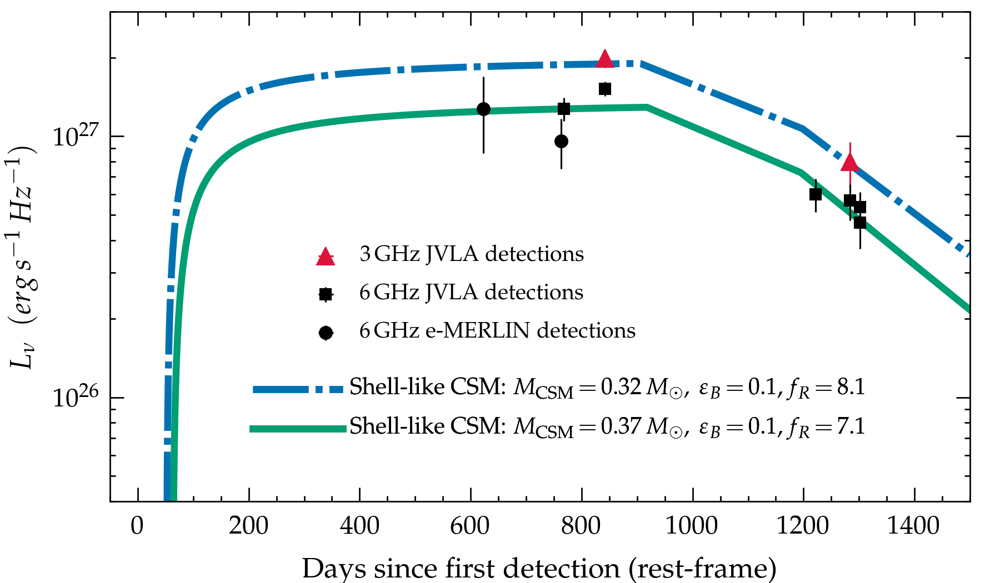
图注：SN2020eyj的射电模型比较。左上为失质量率10^-3太阳质量/年、风速1000 km/s的6 GHz风模型，以不同磁场能量比例匹配；右上改为3×10^-2太阳质量/年。左下为均匀环境模型，取电子能量比例0.1、磁场比例0.01，改变密度约200–710 cm^-3。右下为3和6 GHz厚壳模型，质量分别约0.32、0.37太阳质量，相互作用结束约909、917天。f_R表示壳厚与内半径比。
怎么看这张图：关注各模型能否同时重现平台与后期下降。右下质量采用本文辐射处方，不能与另一篇不同电子谱和动力学模型的质量当作同一测量。 对照风、均匀环境和厚壳的时变解释。
来源与置信度：arXiv HTML；source verified；https://arxiv.org/html/2611.20669v1/f4a.png；https://arxiv.org/html/2611.20669v1/f4b.png；https://arxiv.org/html/2611.20669v1/f4c.png；https://arxiv.org/html/2611.20669v1/f4d.png
10. The rise and fall of 1A 1118-61: First evidence for frequency hysteresis of quasi-periodic oscillations in an X-ray pulsar
- 来源：arXiv / astro-ph.HE
- 链接：https://arxiv.org/abs/2611.20091v1
- 作者：Alexander Salganik, Sergey S. Tsygankov, Sergey V. Molkov, Hua Xiao, Lingda Kong, QingChang Zhao, Long Ji, Alexander A. Mushtukov
- 公告 / 来源日期：2026-11-17
- 阅读层级：相关简报
- 评分：novelty 7/10，importance 7/10，relevance 8/10，final 8.35/10
- 推荐理由：1A1118-61同光度下QPO频率出现约35%升降支差异，给盘磁层历史依赖新增观测诊断，解释需区分测量与开普勒模型。
中文题目：同样亮度却有不同振荡频率——1A 1118−61 爆发中的 QPO 迟滞
问题、方法与结论：作者分析 2026 年爆发期间 ART-XC、NuSTAR 和慧眼的时变及能谱资料，发现准周期振荡频率约在 37–114 mHz 变化。定量关系采用 ART-XC 与 NuSTAR 的独立测量，升降支都可由接近开普勒预期的共同斜率描述，但同一 4–35 keV 光度下，上升支频率比下降支高约 35%。峰值附近单次 ART-XC 观测切成四段后，频率下降约 13%，光度仅变化约 3%，进一步显示瞬时光度不足以决定振荡频率。
意义与贡献：这是盘磁层具有历史依赖的一项具体时域诊断。若 QPO 追踪内盘开普勒运动，同光度下降支可对应约大 20% 的截断半径。不过这一半径变化依赖相同光度到吸积率关系和频率模型，尚非直接成像测量，也不能仅由频率斜率区分开普勒与拍频机制。
可借鉴之处：方法上采用带宽噪声加 Lorentzian 分量拟合功率谱，NuSTAR 用两模块交叉谱减轻死时间影响。慧眼受 Cen X-3 污染，只作定性对照并排除于分支拟合。对过渡观测独立提取每段能谱，有助于避免把计数率比例直接当成光度变化。
局限与关注点：轨道多普勒频移的数量级远小于测得的分支差异，支持在吸积流结构中找原因。谱成分比例也有迟滞，但过渡段并未随 QPO 同步突变，二者还需具体机制连接。盘磁层耦合、视向辐射和模型能段外推均会影响解释，作者提出的力矩变化属于示意应用，尚未形成唯一的磁层动力学解。
图3
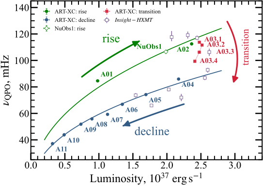
图注：2026年爆发中QPO质心频率随4–35 keV光度的关系。ART-XC与NuSTAR点为整次观测平均，A03单独分成连续四段。慧眼点仅作对照，不参与定量分支拟合。实线是频率正比于光度3/7次幂、分支归一化不同的最佳关系。
怎么看这张图：在同光度处横向比较升降支频率，再看A03如何过渡。慧眼污染使其只能提供定性支持。 直接展示迟滞而非仅时间演化。
来源与置信度：arXiv HTML；source verified；https://arxiv.org/html/2611.20091v1/fig03.svg
11. Neural Surrogates for Tabulated Nuclear Equations of State in Core-Collapse Supernova Simulations
- 来源：arXiv / astro-ph.HE
- 链接：https://arxiv.org/abs/2611.19400v1
- 作者：Youhei Masada, Jin Matsumoto, Tomoya Takiwaki
- 公告 / 来源日期：2026-11-17
- 阅读层级：相关简报
- 评分：novelty 7/10，importance 7/10，relevance 8/10，final 8.35/10
- 推荐理由：小型神经EOS代理节约约1500倍内存，并以激波管和一维坍缩验证流体误差，提供具体可迁移方法；尚非完整多维中微子超新星结果。
中文题目：用小型神经网络压缩核物质状态方程，流体测试比回归误差更关键
问题、方法与结论：作者用 LS220 核物质状态方程的五百万有效样本训练网络，从密度、比内能和电子分数预测压力、声速与有效绝热指数。一个约 1.3 万参数的小网络将表格约 160 MB 的存储量压缩到约 100 kB，缩小约 1500 倍。在多组一维激波管中，密度和压力等误差达到千分之几或更低，截断静力平衡模型也与原表结果接近。
意义与贡献：工作把机器学习代理放回流体求解器检验，发现更小的验证集回归误差未必给出更好的激波演化。明确证明的计算收益是存储压缩，当前评估速度与查表相近或更慢。多设备大规模计算可能受益，但需要按实际硬件比较通信、内存与函数评估成本。
可借鉴之处：值得复用的是按动力学轨迹检验代理，除随机热力学误差外，还比较激波位置、接触面和波速，并核对比内能零点约定。图 6 同时给出参考表、标准网络和小网络的解，适合判断代理的点误差如何累积成流体差异。
局限与关注点：一维绝热坍缩计算稳定越过反弹并演化至少 300 ms，但尚未与相同设置的原表坍缩直接对照，且不含电子俘获和中微子输运。静力测试在密度 $10^{12}\,\mathrm{g\,cm^{-3}}$ 处截断，不能当作完整中子星质量半径曲线。训练域外也没有显式回退，因而完整超新星应用仍需热力学一致性、弱作用和外推保护的进一步验证。
图6
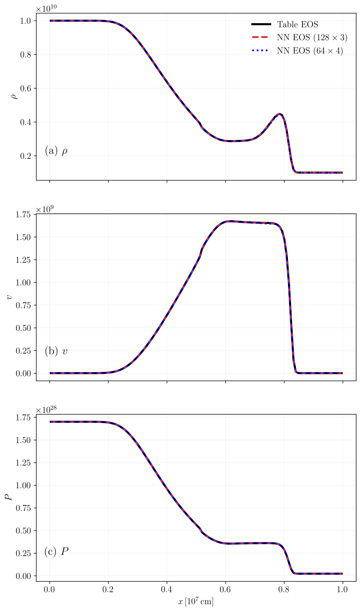
图注：t=1.5×10^-3秒时激波管的密度、速度和压力剖面，依次为a、b、c。黑实线是LS220原表，红虚线是128×3标准网络，蓝点线是64×4小网络。标准网络三量相对L1误差依次为6.5×10^-4、1.4×10^-3、7.3×10^-4，小网络依次为1.0×10^-3、1.9×10^-3、9.3×10^-4。
怎么看这张图：比较波前位置与幅度，并结合列出的L1误差判断，不凭曲线肉眼重合宣称全部热力学状态都已验证。 直接检验压缩代理在流体求解器中的表现。
来源与置信度：arXiv HTML；source verified；https://arxiv.org/html/2611.19400v1/shock_tube.png
12. Carbon dioxide and amorphous water ices in the debris disk around β Pictoris
- 来源：Science
- 链接：https://www.science.org/doi/abs/10.1126/science.adw7770?af=R
- 作者：S. K. Betti, C. H. Chen, C. Xie, K. Worthen, S. Brittain, J. Najita, I. Rebollido, T. Beck, B. T. Bolin, D. Hines, C. Ingebretsen, C. Lisse, M. D. Perrin, L. Pueyo, I. Wong, C. Stark
- 公告 / 来源日期：2026-11-12
- 阅读层级：相关简报
- 评分：novelty 8/10，importance 8/10，relevance 7/10，final 8.65/10
- 推荐理由：独立初筛补入：β Pictoris碎屑盘CO2及非晶水冰研究；原文403，分数为题目及上次已核摘要的暂定科学价值，全文未通过。 本轮复用11月16日已记录的类型/摘要筛查，全文验收状态单独记录。
中文题目：β Pictoris碎屑盘中的非晶水冰与二氧化碳冰：从散射光谱追溯冷物质
问题、方法与结论：β Pictoris是约两千万年的年轻恒星，盘中的冰一直主要由气体和行星形成线索间接推断。作者用JWST近红外光谱仪的积分视场观测，在距离恒星约100天文单位的东北、西南两侧取得散射光谱。扣除恒星点扩散函数、校正处理造成的通量损失并除去恒星光谱后，两侧都出现约3微米的宽水冰特征，以及两种碳同位素二氧化碳冰的窄特征。新增信息不仅是存在冰，还包括水冰主要为非晶态、二氧化碳处于富水基质中这一成分约束。
在采用球形颗粒散射、指定材料光学常数及固定组分的模型下，作者给出水冰结晶比例约7%的三倍标准差上限。近似均匀的冰特征分布更支持多次小规模碰撞持续释放冰尘，不能直接证明某次碰撞历史或精确给冰定年。本文保留作者稿的定量差异：正文称二氧化碳/水冰约11%，表1按主要同位素列出约9.2%和9.4%；可稳妥概括为约一成，不能把两套数字当作同一精确定义。
意义与贡献：此前气态CO的短寿命说明挥发物需要补给，却无法唯一说明固态母体是什么。本文同时观测水冰带、二氧化碳同位素带和水冰带形，把“有挥发物”推进到对固态材料及其分子环境的约束。与已经发现晶态水冰的HD 181327相比，β Pictoris展示了不同的热加工状态。不过，非晶结构既可能被保存，也可能由辐照破坏晶格产生；这是一条早期冷物质保存的证据链，尚不是唯一历史解释。
可借鉴之处：值得借鉴的是把仪器处理、谱带识别和材料模型分层检验：先用参考星消除强背景，再用负盘注入估算信号损失，最后把实验室光谱卷积到真实仪器分辨率才比较峰位与宽度。该逻辑适用于弱结构叠加强背景的问题。数值应用需要真实点扩散函数、空间模型、波长响应和连续谱误差；不能把材料模型的窄统计区间直接作为完整系统误差。
局限与关注点：这篇不是高能辐射或中微子研究，但提供了光谱推断中非常清楚的反例：特征检出可以稳健，成分比例和形成史却仍有退化。读者应关注水冰结晶上限如何随颗粒形状、孔隙率及固定组分改变，以及更高分辨率能否拆开二氧化碳带的多成分。对其他波段的迁移应限于背景扣除和响应匹配方法，不把冰尘物理直接套入伽马源。
图1
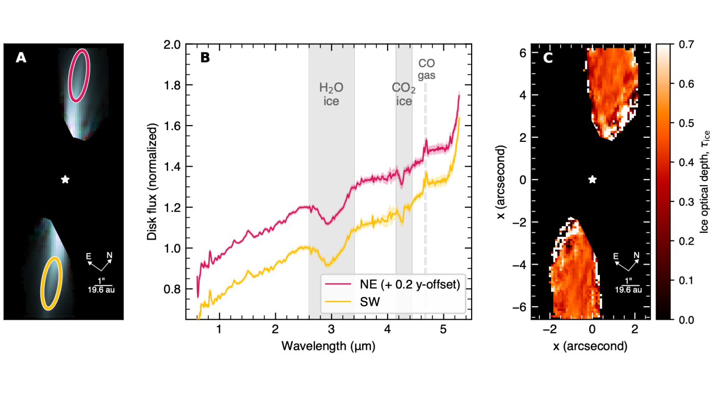
图注：A为扣除恒星光后的盘伪彩图，品红和金色椭圆标出东北和西南孔径，白星为恒星位置，黑区为屏蔽区域。B为在2.5微米归一化的反射谱，东北谱向上平移0.2，浅色带为1σ误差；灰带标水冰及二氧化碳冰，虚线标CO气体。C为水冰特征深度图，坐标相对恒星。
怎么看这张图：先比较两侧谱带是否在相同波段，再看中央屏蔽范围；两侧相近不代表整盘各处成分都已精确测定。 分别支持谱带识别、结晶度与基质诊断
来源与置信度：author manuscript PDF；source verified；https://arxiv.org/pdf/2611.18918#page=6
图3
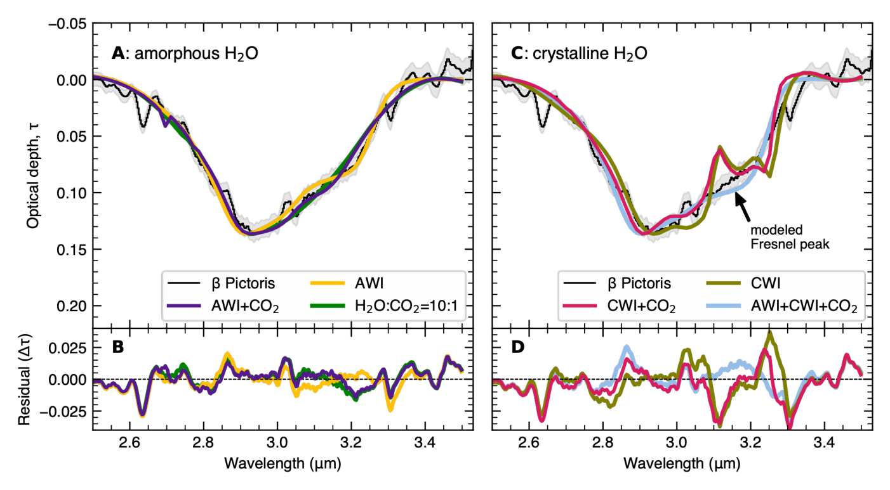
图注：A为东北孔径水冰有效光学深度，黑线和灰带为数据及1σ误差，彩线为非晶水冰及其与二氧化碳组合的模型；B为这些模型的残差。C、D以相同方式展示含晶态水冰的模型及残差。横轴为波长，光学深度无量纲；零残差用虚线标出。
怎么看这张图：重点看3.1微米附近晶态模型的突出结构及残差，而非只看整条曲线是否大致贴合。该比较支持非晶态主导，但上限仍依赖固定材料和颗粒模型。 分别支持谱带识别、结晶度与基质诊断
来源与置信度：author manuscript PDF；source verified；https://arxiv.org/pdf/2611.18918#page=8
图4
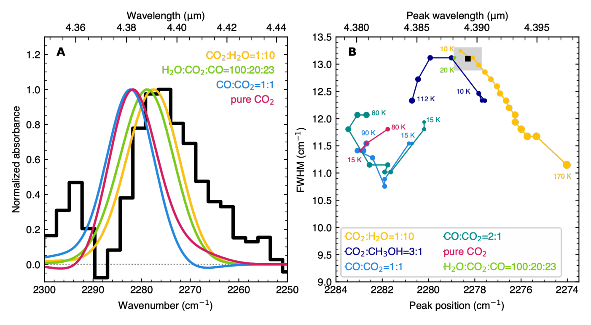
图注：A为东北孔径碳13二氧化碳带，黑色直方线是观测，各彩线是不同混合物的实验室谱，按最大吸收归一化。B比较带峰位置与半高全宽，黑方块及灰区是观测和1σ误差；实验室谱卷积至NIRSpec分辨率后以彩点连接，点大小随温度增加，端点标注温度。
怎么看这张图：需要同时匹配峰位和宽度；富水混合物较接近数据，但低分辨率不能分解所有组分，因此不是唯一配方的测定。 分别支持谱带识别、结晶度与基质诊断
来源与置信度：author manuscript PDF；source verified；https://arxiv.org/pdf/2611.18918#page=9
说明
评分由 LLM 给出初评，再由本地阈值策略过滤；IACT、TeV 伽马射线和高能中微子天文学按重点方向处理。